x¸c nhËn danh tÝnh
6.1. VÊn ®Ò xng danh.
Trong ch¬ng tríc ta ®· thÊy c¸c kü thuËt mËt m· cã thÓ ®îc øng dông ®Ó x©y dùng nhiÒu gi¶i ph¸p an toµn cho vÊn ®Ò x¸c nhËn c¸c th«ng b¸o cïng víi ngêi göi trªn c¸c m¹ng truyÒn tin c«ng céng. Trong ch¬ng nµy ta sÏ xÐt viÖc øng dông còng c¸c kü thuËt ®ã cho bµi to¸n x©y dùng c¸c s¬ ®å xng danh vµ x¸c nhËn danh tÝnh, còng lµ mét bµi to¸n quan träng vµ thêng gÆp trong mäi ho¹t ®éng giao lu th«ng tin, ®Æc biÖt giao lu qua m¹ng. ViÖc xng danh vµ x¸c nhËn danh tÝnh cña mét ngêi thêng lµ cÇn thiÕt trong nh÷ng t×nh huèng nh:
- §Ó rót tiÒn tõ c¸c m¸y rót tiÒn tù ®éng (ATM), ta cÇn xng danh b»ng c¸ch dïng mét thÎ rót tiÒn cïng víi mét sè PIN (sè xng danh c¸ nh©n) cña m×nh
- §Ó mua hµng hoÆc thanh to¸n mét kho¶n tiÒn qua m¹ng ®iÖn tho¹i, ta cÇn th«ng b¸o sè thÎ tÝn dông (cïng ngµy hÕt h¹n) cña m×nh.
- §Ó truy nhËp vµo mét m¸y tÝnh trªn mét m¹ng, ta cÇn khai b¸o tªn ngêi dïng cïng mËt hiÖu (password) cña m×nh.
- v.v...
Trong thùc tÕ cuéc sèng, viÖc xng danh theo thãi quen thêng kh«ng ®ßi hái tÝnh an toµn, ch¼ng h¹n c¸c sè PIN, mËt khÈu thêng kh«ng cã g× ®Ó b¶o ®¶m lµ ®îc gi÷ kÝn, ngêi ngoµi kh«ng biÕt ®îc. Tuy nhiªn, cuéc sèng cµng ngµy cµng ®îc tin häc ho¸, phÇn lín c¸c giao dÞch ®îc thùc hiÖn trªn c¸c m¹ng tin häc, viÖc xem thêng c¸c yªu cÇu vÒ an toµn trong c¸c kh©u xng danh vµ x¸c nhËn danh tÝnh lµ kh«ng thÓ tiÕp tôc ®îc; cÇn ph¶i cã nh÷ng gi¶i ph¸p b¶o ®¶m tÝnh an toµn cho c¸c ho¹t ®éng ®ã.
Môc tiªu an toµn cña viÖc xng danh lµ b¶o ®¶m sao cho khi “nghe” mét chñ thÓ A xng danh víi mét chñ thÓ B, bÊt kú mét ai kh¸c A còng kh«ng thÓ sau ®ã m¹o mhËn m×nh lµ A, kÓ c¶ chÝnh B còng kh«ng thÓ m¹o xng m×nh lµ A sau khi ®îc A xng danh víi m×nh. Nãi c¸ch kh¸c, A muèn chøng minh ®Ó ®îc ®èi t¸c x¸c nhËn danh tÝnh cña m×nh mµ kh«ng ®Ó lé bÊt cø th«ng tin nµo vÒ viÖc chøng minh danh tÝnh ®ã.
ViÖc xng danh thêng ph¶i th«ng qua mét giao thøc hái-®¸p nµo ®ã, qua giao thøc ®ã, ®Ó B cã thÓ x¸c nhËn danh tÝnh cña A, B ®Æt cho A mét c©u hái; A ph¶i tr¶ lêi, trong tr¶ lêi ®ã A ph¶i chøng tá cho B biÕt lµ A cã së h÷u mét bÝ mËt riªng A míi cã, ®iÒu ®ã thuyÕt phôc B tin ch¾c r»ng ngêi tr¶ lêi ®óng lµ A vµ do ®ã x¸c nhËn danh tÝnh cña A. VÊn ®Ò khã ë ®©y lµ A ph¶i lµm cho B biÕt lµ
A cã së h÷u mét bÝ mËt chØ riªng A míi cã, nhng l¹i kh«ng ®îc lé cho B biÕt c¸i bÝ mËt riªng A míi cã ®ã lµ c¸i g×. MÆt kh¸c, ®Ó cho viÖc “A cã së h÷u mét bÝ mËt cña riªng A” ®ã lµ ®¸ng tin (dï lµ kh«ng biÕt) th× cÇn ®îc chøng thùc bëi mét bªn thø ba nµo ®ã,ch¼ng h¹n bëi mét c¬ quan ®îc uû th¸c (trusted authority). TÊt nhiªn c¬ quan ®îc uû th¸c nµy còng kh«ng biÕt b¶n th©n bÝ mËt cña A, nhng biÕt vµ chøng nhËn A lµ chñ së h÷u cña mét yÕu tè c«ng khai mµ viÖc A sö dông nã chøng tá A cã c¸i bÝ mËt nãi trªn.
Trong tiÕt ngay sau ®©y ta sÏ giíi thiÖu mét s¬ ®å xng danh ®iÓn h×nh ®Ó minh ho¹ c¸c ý tëng nãi trªn.
6.2. S¬ ®å xng danh Schnorr.
Trong s¬ ®å xng danh nµy cã sù tham gia cña mét c¬ quan ®îc uû th¸c mµ ta ký hiÖu lµ TA. TA sÏ chän c¸c tham sè cho s¬ ®å xng danh nh sau:
- mét sè nguyªn tè lín p sao cho bµi to¸n tÝnh l«garit rêi r¹c theo modp lµ rÊt khã; vµ mét íc sè nguyªn tè q cña p -1 (ngêi ta khuyªn nªn chän p 2512 vµ q 2140 ).
-
mét phÇn tö
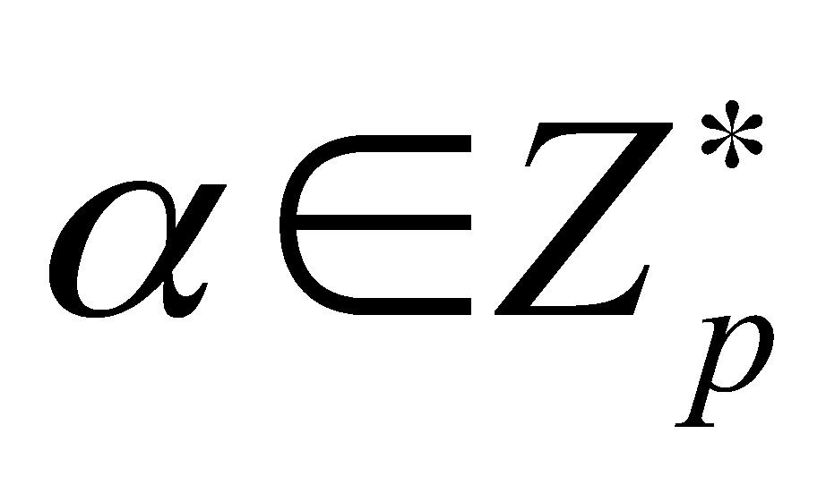
- mét tham sè an toµn t sao cho q 2t. Cã thÓ lÊy t =40.
- TA chän cho m×nh mét s¬ ®å ch÷ ký gåm mét thuËt to¸n ký(bÝ mËt) sigTA vµ mét thuËt to¸n kiÓm thö (c«ng khai)verTA.
- mét hµm b¨m an toµn (mét phÝa vµ kh«ng va ch¹m m¹nh). Ta gi¶ thiÕt lµ mäi th«ng tin ®Òu ®îc “tãm lîc” bëi hµm b¨m tríc khi ®îc ký; tuy nhiªn trong m« t¶ sau ®©y ®Ó cho ®¬n gi¶n ta sÏ bá qua c¸c bíc sö dông hµm b¨m.
C¸c tham sè p, q, , thuËt to¸n kiÓm thö verTA vµ hµm b¨m ®Òu cã thÓ ®îc c«ng bè c«ng khai.
B©y giê, mét chñ thÓ A cÇn xng danh sÏ yªu cÇu TA cÊp cho m×nh mét chøng chØ. Thñ tôc cÊp chøng chØ cho A ®îc tiÕn hµnh nh sau:
1.TA x¸c lËp c¸c th«ng tin vÒ danh tÝnh cña A nh hä,tªn, ngµy sinh, sè chøng minh hoÆc hé chiÕu, v.v... díi d¹ng mét d·y ký tù mµ ta ký hiÖu lµ I A hay ID(A).
2. A chän bÝ mËt mét sè ngÉu nhiªn a (0 a q-1), tÝnh
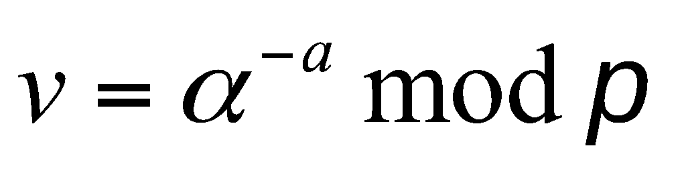
vµ chuyÓn sè v cho TA.
3. TA t¹o ch÷ ký s =sigTA(IA, v) vµ cÊp cho A chøng chØ
C(A) = (ID(A), v, s ).
Nh vËy, chøng chØ mµ TA cÊp cho A gåm (IA, v) vµ ch÷ ký cña TA trªn th«ng tin (IA, v) ®ã. Chó ý r»ng TA cÊp chøng chØ cho A mµ hoµn toµn kh«ng biÕt g× vÒ th«ng tin bÝ mËt cña A lµ sè a.
B©y giê, víi chøng chØ C(A) ®ã, A cã thÓ xng danh víi bÊt kú ®èi t¸c B nµo b»ng c¸ch cïng B thùc hiÖn mét giao thøc x¸c nhËn danh tÝnh nh sau:
A chän thªm mét sè ngÉu nhiªn k (0 k q-1), tÝnh
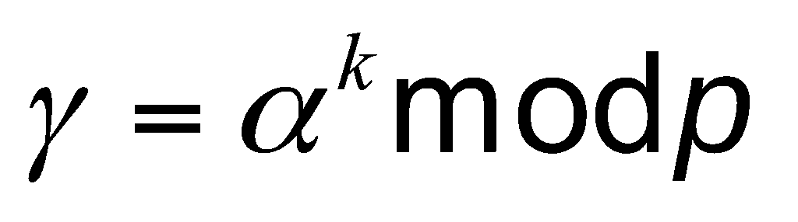
,vµ göi cho B c¸c th«ng tin C(A) vµ .
2. B kiÓm thö ch÷ ký cña TA trong chøng chØ C(A) bëi hÖ thøc verTA(ID(A), v, s) =®óng. KiÓm thö xong, B chän mét sè ngÉu nhiªn r (1 r 2t ) vµ göi r cho A.
A tÝnh y =k +ar modq vµ göi y cho B.
B thö ®iÒu kiÖn
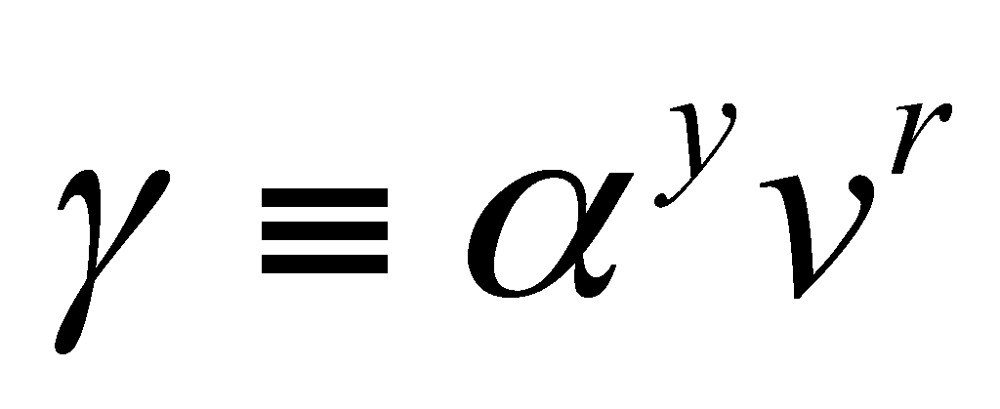
(modp)vµ nÕu ®iÒu kiÖn ®ã ®îc tho¶ m·n th× x¸c nhËn danh tÝnh cña A.
Thùc hiÖn giao thøc ®ã, A sÏ chøng minh ®îc danh tÝnh cña m×nh, v×
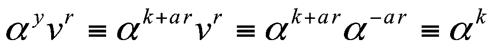
(modp),
tøc ®iÒu kiÖn mµ B cÇn thö lµ ®óng.
S¬ ®å xng danh cïng víi giao thøc x¸c nhËn danh tÝnh nh m« t¶ ë trªn cã c¸c tÝnh chÊt ®¸p øng c¸c yªu cÇu nh ®Ò ra tõ phÇn ®Æt vÊn ®Ò ë tiÕt 6.1. §iÒu võa chøng minh ë trªn chøng tá r»ng nÕu A tu©n thñ giao thøc th× B x¸c nhËn danh tÝnh cña A lµ ®óng (B tin r»ng A qu¶ thùc cã së h÷u mét bÝ mËt a, dï B còng kh«ng biÕt c¸i bÝ mËt a ®ã lµ sè nµo).
B©y giê ta xÐt kh¶ n¨ng mét ngêi O muèn gi¶ danh A ®Ó giao dÞch víi B. Kh¶ n¨ng thø nhÊt lµ O t¹o ra mét chøng chØ gi¶ m¹o víi danh tÝnh cña A, mét chøng chØ nh vËy cã d¹ng
C’(A) = (ID(A), v’, s’),
trong ®ã v’ v. §Ó t¹o ra mét chøng chØ nh vËy th× O ph¶i t¹o ra ®îc s’ lµ ch÷ ký cña TA trªn (ID(A), v’), O kh«ng biÕt thuËt to¸n ký sigTA nªn kh«ng thÓ t¹o ra ch÷ ký ®óng cña TA ®îc, vµ nÕu lÊy s’ lµ mét ch÷ ký gi¶ m¹o, th× khi thùc hiÖn ®iÓm 2 cña giao thøc x¸c nhËn danh tÝnh thÓ nµo B còng ph¸t hiÖn ra. Kh¶ n¨ng thø hai lµ O vÉn dïng chøng chØ thËt C(A) cña A, tù chän mét sè k vµ tÝnh sè t¬ng øng theo ®iÓm 1 cña giao thøc x¸c nhËn danh tÝnh. VÊn ®Ò ë ®©y lµ khi B göi ®Õn sè r , O ph¶i tr¶ lêi l¹i b»ng mét sè y sao cho ®iÒu kiÖn (modp) ®îc nghiÖm ®óng. §iÒu nµy xem ra lµ rÊt khã, Ýt nhÊt còng khã nh lµ O biÕt bÝ mËt vÒ sè a cña A vËy. Thùc vËy, gi¶ sö O cã kh¶ n¨ng nãi trªn, khi ®ã ta cho hai lÇn hái r1 vµ r 2 O sÏ cã hai tr¶ lêi y1 vµ y2, vµ ta cã
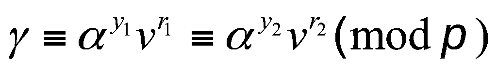
tõ ®ã suy ra
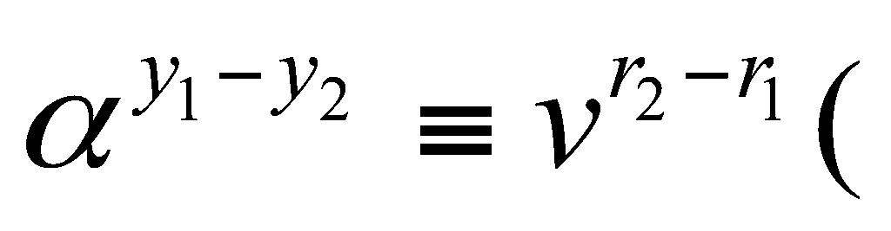
V× v = -a, ta cã
y1 – y2 a(r2 – r1) (modq).
V×
q
lµ sè nguyªn tè
2t
vµ 0
r2
- r1
2t
, nªn gcd(r2
- r1,
q)
=1, vµ O cã thÓ tÝnh ®îc
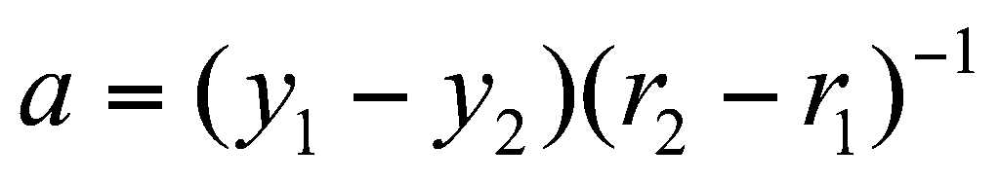
ThÝ
dô : LÊy p
=88667, q
= 1031 vµ t
=10. PhÇn
tö
= 70322 cã cÊp q
trong
 .
Gi¶ sö A chän sè mò bÝ mËt lµ a
=
755, khi
®ã
v
= 13136.
.
Gi¶ sö A chän sè mò bÝ mËt lµ a
=
755, khi
®ã
v
= 13136.
A vµ B cã thÓ thùc hiÖn giao thøc x¸c ®Þnh danh tÝnh nh sau: A chän k = 543, vµ tÝnh =70322543mod88667 =84109 råi göi cho B. Gi¶ sö B göi r =1000 cho A, A tr¶ lêi l¹i b»ng y =k +ar modq = =543+755.1000mod1031 = 851. B thö ®iÒu kiÖn (modp), trong trêng hîp nµy lµ:
84109 70322851131361000 (mod 88667),
®ã lµ ®ång d thøc ®óng. B x¸c nhËn danh tÝnh cña A.
B©y giê vÉn víi c¸c tham sè trªn, gi¶ thiÕt O cã kh¶ n¨ng tr¶ lêi ®óng hai c©u hái r1=1000 vµ r2=19 cña B b»ng y1=851 vµ y2=454. Khi ®ã O cã thÓ tÝnh ®îc
modq
= (851-454)(19-1000)-1 mod1031 = 755,
®óng lµ sè bÝ mËt cña A.
S¬ ®å xng danh Schnorr, víi giao thøc x¸c nhËn danh tÝnh nh ®Þnh nghÜa ë trªn, lµ cã tÝnh chÊt ®Çy ®ñ (viÖc cã bÝ mËt a b¶o ®¶m A chøng minh ®îc danh tÝnh cña m×nh), vµ ®óng ®¾n ( viÖc gi¶ danh A thµnh c«ng còng khã nh biÕt bÝ mËt cña A); tuy nhiªn nh võa tr×nh bµy trong thÝ dô trªn, s¬ ®å ®ã cha ph¶i lµ an toµn, viÖc gi¶ danh lµ khã nÕu O kh«ng hÒ biÕt g× vÒ s¬ ®å xng danh ®ã, chø nÕu, ch¼ng h¹n, O ®· ®îc A xng danh víi Ýt nhÊt hai lÇn (tøc hai lÇn biÕt ®îc hai cÆp sè (r1, y1) vµ (r2, y2)) th× cã kh¶ n¨ng O ph¸t hiÖn ®îc bÝ mËt cña A, nh vËy viÖc xng danh cña A kh«ng cßn an toµn n÷a!
§Ó kh¾c phôc ®iÓm yÕu ®ã cña s¬ ®å Schnorr, Okamoto ®· ®Ò xuÊt mét söa ®æi lµm cho s¬ ®å trë nªn an toµn, söa ®æi nµy dùa trªn tÝnh khã cña mét bµi to¸n ®Æc biÖt vÒ tÝnh l«garit rêi r¹c. Ta tr×nh bµy trong tiÕt sau ®©y s¬ ®å ®îc söa ®æi ®ã.
6.3. S¬ ®å xng danh Okamoto.
Còng nh ®èi víi s¬ ®å Schnorr, s¬ ®å xng danh Okamoto cÇn cã mét c¬ quan uû th¸c TA ®Ó cÊp chøng chØ cho c¸c ngêi tham gia.
TA
chä tríc c¸c sè nguyªn tè p
vµ q
nh ®èi víi s¬ ®å Schnorr. Sau
®ã, TA chän hai sè
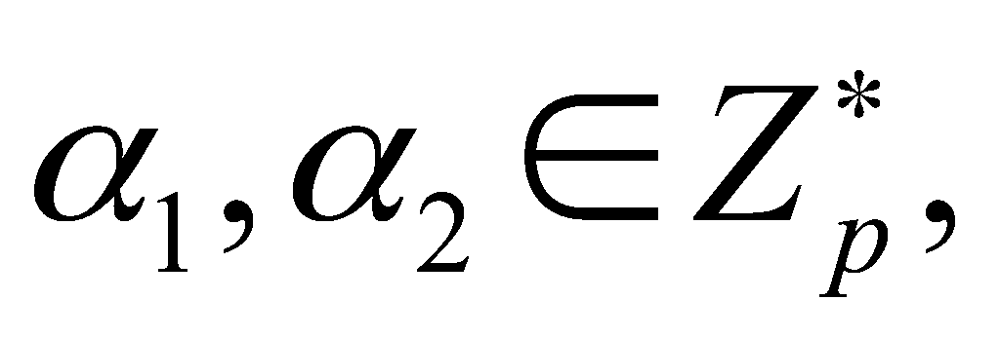 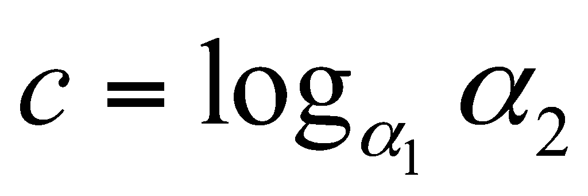 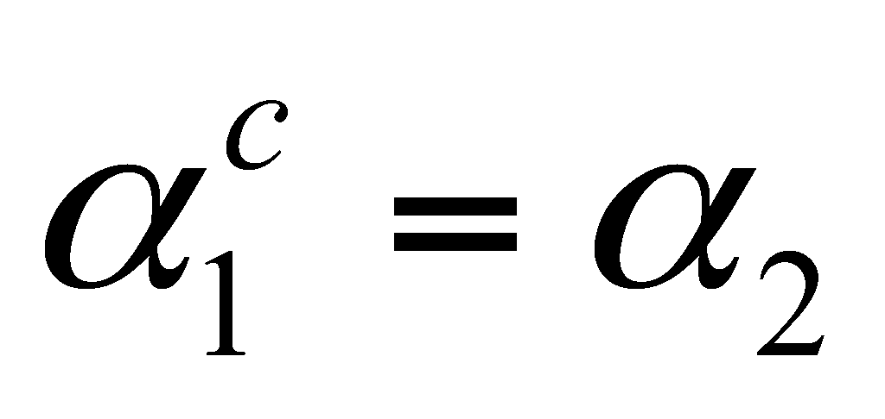
Thñ tôc cÊp chøng chØ cho A ®îc tiÕn hµnh nh sau:
1. TA x¸c lËp c¸c th«ng tin vÒ danh tÝnh cña A díi d¹ng mét d·y ký tù mµ ta ký hiÖu lµ I A hay ID(A).
2. A chän bÝ mËt hai sè ngÉu nhiªn a1, a2 (0 a1, a2 q-1), tÝnh
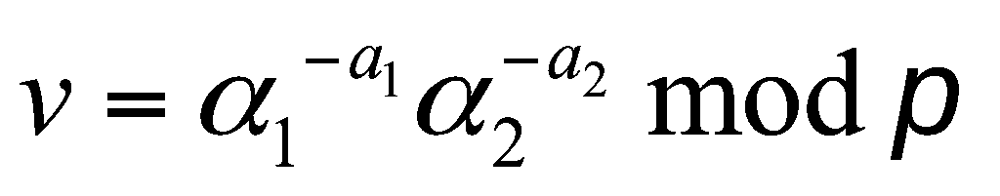
vµ chuyÓn sè v cho TA.
3. TA t¹o ch÷ ký s =sigTA(IA, v) vµ cÊp cho A chøng chØ
C(A) = (ID(A), v, s ).
B©y giê, víi chøng chØ C(A) ®ã, A cã thÓ xng danh víi bÊt kú ®èi t¸c B nµo b»ng c¸ch cïng B thùc hiÖn mét giao thøc x¸c nhËn danh tÝnh nh sau:
A chän thªm hai sè ngÉu nhiªn k1,k2 (0 k1,k2 q-1), tÝnh
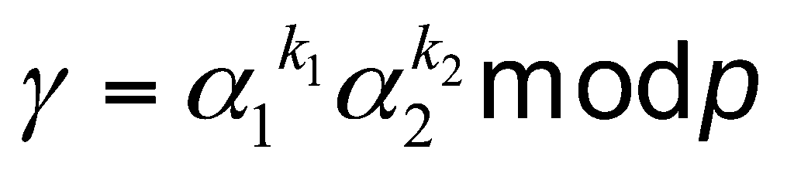
,vµ göi cho B c¸c th«ng tin C(A) vµ .
2. B kiÓm thö ch÷ ký cña TA trong chøng chØ C(A) bëi hÖ thøc verTA(ID(A), v, s) =®óng. KiÓm thö xong, B chän mét sè ngÉu nhiªn r (1 r 2t ) vµ göi r cho A.
3. A tÝnh y1 =k1 +a1r modq ,
y2 =k2 +a2r modq ,
vµ göi y1,y2 cho B.
B thö ®iÒu kiÖn
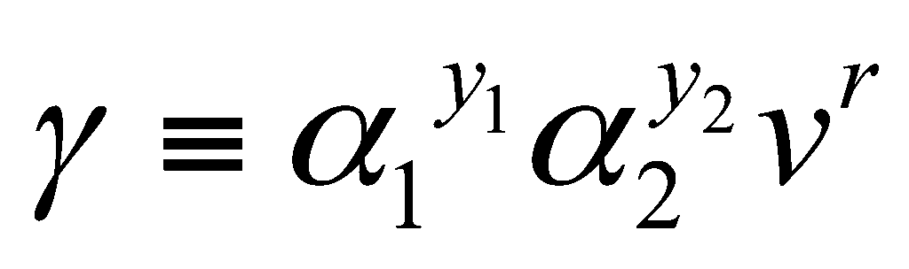
(modp)vµ nÕu ®iÒu kiÖn ®ã ®îc tho¶ m·n th× x¸c nhËn danh tÝnh cña A.
Thùc hiÖn giao thøc ®ã, A sÏ chøng minh ®îc danh tÝnh cña m×nh, v×
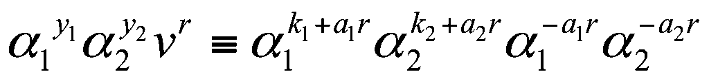
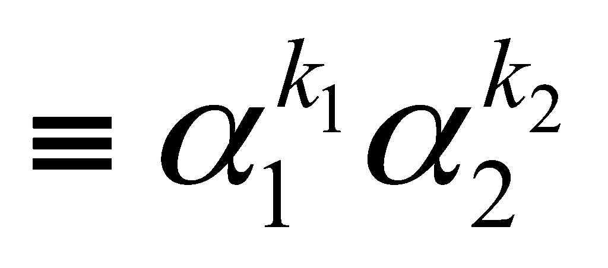
(modp)
tøc ®iÒu kiÖn mµ B cÇn thö lµ ®óng. Nh vËy, do biÕt cÆp sè bÝ mËt (a1, a2), nªn A cã thÓ thùc hiÖn th«ng suèt giao thøc x¸c nhËn ®Ó chøng minh danh tÝnh cña m×nh.
Ngîc l¹i, mét ngêi kh¸c A, do kh«ng biÕt cÆp sè bÝ mËt (a1, a2), nªn khã cã kh¶ n¨ng tÝnh ®óng ®îc (y1,y2) ®Ó tr¶ lêi B ë bíc 3 cña giao thøc, tøc lµ kh«ng vît qua ®îc sù kiÓm thö cña giao thøc ®Ó m¹o nhËn m×nh lµ A.
B©y giê gi¶ sö cã mét ngêi O cã thÓ thùc hiÖn th«ng suèt giao thøc x¸c nhËn ®Ó cã thÓ ®îc m¹o nhËn lµ A, ch¼ng h¹n Ýt nhÊt hai lÇn. §iÒu ®ã cã nghÜa lµ O biÕt ®îc hai sè r s vµ hai cÆp sè (y1,y2), (z1,z2) sao cho
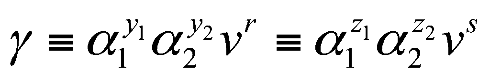
§Æt
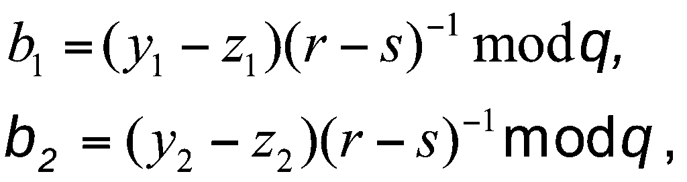
ta sÏ ®îc
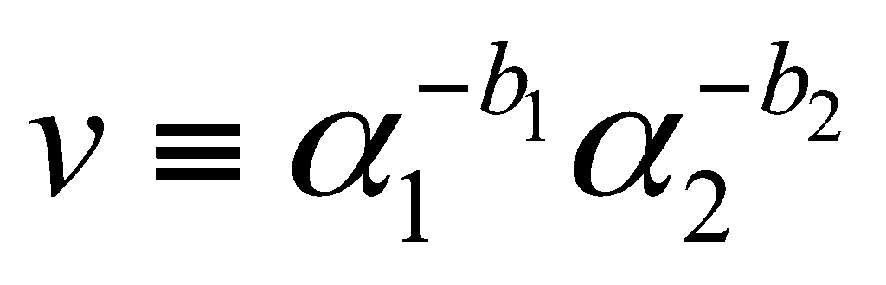
do ®ã
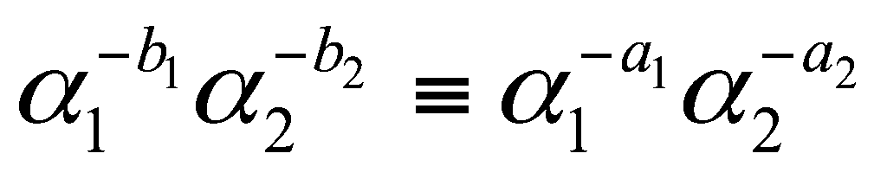
tøc lµ
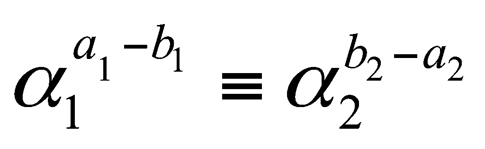
Gi¶ thiÕt r»ng O vµ A liªn minh víi nhau, khi ®ã biÕt ®îc c¶ c¸c sè a1, a2, b1, b2. NÕu gi¶ thiÕt (a1, a2) (b1, b2) th× a2 b2 , vµ
(b2 - a2)-1modq tån t¹i, vµ l«garit rêi r¹c c ®îc tÝnh bëi
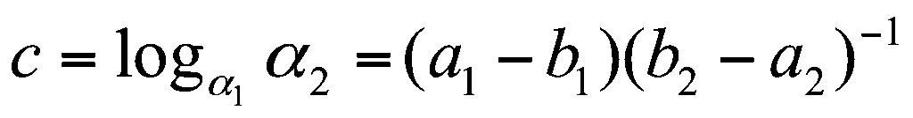
Nh vËy, nÕu O cã thÓ thùc hiÖn th«ng suèt giao thøc x¸c nhËn ®Ó ®îc m¹o nhËn lµ A th× khi O vµ A liªn minh víi nhau cã thÓ t×m ®îc kh¸ dÔ dµng l«garit rêi r¹c c. Nhng tõ ®Çu ta ®· gi¶ thiÕt viÖc t×m ra c lµ cùc kú khã ®èi víi bÊt kú ai (lµ A, lµ O, thËm chÝ lµ liªn minh cña A vµ O,...), nªn còng sÏ cùc kú khã ®Ó O thùc hiÖn ®îc th«ng suèt giao thøc x¸c nhËn víi môc ®Ých m¹o xng lµ A. VËy lµ ta ®· chøng minh ®îc tÝnh an toµn cña s¬ ®å xng danh Okamoto víi giao thøc x¸c nhËn danh tÝnh nh m« t¶ ë trªn. Trong chøng minh ®ã cßn mét sè chç tinh tÕ cÇn ®uîc bæ sung thªm, ch¼ng h¹n nh v× sao cã thÓ gi¶ thiÕt (a1, a2) (b1, b2), thùc ra ngêi ta ®· chøng minh ®îc r»ng x¸c suÊt cña kh¶ n¨ng (a1, a2) = (b1, b2) lµ rÊt bÐ, kh«ng ®¸ng kÓ. Tuy nhiªn, ®Ó ®¬n gi¶n tr×nh bµy, xin phÐp ®îc bá qua mét vµi chi tiÕt chøng minh tinh tÕ ®ã.
6.4. S¬ ®å xng danh Guillou-Quisquater.
S¬ ®å Guillou-Quisquater còng ®îc x©y dùng theo cïng mét c¸ch thøc nh c¸c s¬ ®å Schnorr vµ Okamoto kÓ trªn, nhng bµi to¸n khã mµ ta dùa vµo ë ®©y kh«ng ph¶i lµ bµi to¸n tÝnh l«garit rêi r¹c mµ lµ bµi to¸n RSA.
S¬ ®å còng cÇn cã sù tham gia cña mét c¬ quan uû th¸c TA ®Ó cÊp chøng chØ cho c¸c ngêi tham gia. TA chän hai sè nguyªn tè lín p vµ q vµ tÝnh tÝch n =pq, gi÷ bÝ mËt p ,q vµ c«ng khai n. C¸c tham sè ®ã ®îc chän sao cho bµi to¸n ph©n tÝch n thµnh thõa sè lµ rÊt khã. TA còng chän thªm mét sè b lµ sè nguyªn tè cã ®é lín kho¶ng 240 nh lµ mét tham sè an toµn. Sè b còng ®îc xem lµ sè mò tho¶ m·n ®iÒu kiÖn RSA, nghÜa lµ viÖc tÝnh v =ub modn lµ dÔ, nhng viÖc tÝnh ngîc u tõ v lµ rÊt khã, nÕu kh«ng biÕt p,q.
Thñ tôc cÊp chøng chØ cho mét ngêi tham gia A ®îc tiÕn hµnh nh sau:
1.TA x¸c lËp c¸c th«ng tin vÒ danh tÝnh cña A díi d¹ng mét d·y ký tù mµ ta ký hiÖu lµ I A hay ID(A).
2. A chän bÝ mËt mét sè ngÉu nhiªn u (0 u n-1), tÝnh
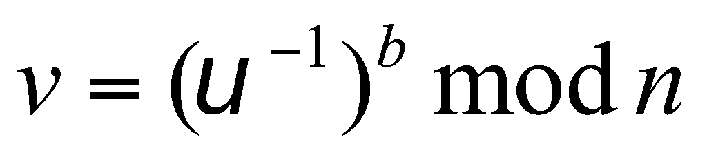
vµ chuyÓn sè v cho TA.
3. TA t¹o ch÷ ký s =sigTA(IA, v) vµ cÊp cho A chøng chØ
C(A) = (ID(A), v, s ).
Nh vËy, chøng chØ mµ TA cÊp cho A gåm (IA, v) vµ ch÷ ký cña TA trªn th«ng tin (IA, v) ®ã. Chó ý r»ng TA cÊp chøng chØ cho A mµ cã thÓ kh«ng biÕt g× vÒ th«ng tin bÝ mËt cña A lµ sè u.
B©y giê, víi chøng chØ C(A) ®ã, A cã thÓ xng danh víi bÊt kú ®èi t¸c B nµo b»ng c¸ch cïng B thùc hiÖn mét giao thøc x¸c nhËn danh tÝnh nh sau:
A chän thªm mét sè ngÉu nhiªn k (0 k n-1), tÝnh
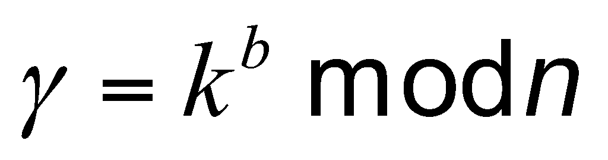
,vµ göi cho B c¸c th«ng tin C(A) vµ .
2. B kiÓm thö ch÷ ký cña TA trong chøng chØ C(A) bëi hÖ thøc verTA(ID(A), v, s) =®óng. KiÓm thö xong, B chän mét sè ngÉu nhiªn r (1 r b -1 ) vµ göi r cho A.
3. A tÝnh y =k.u r modn vµ göi y cho B.
4. B thö ®iÒu kiÖn
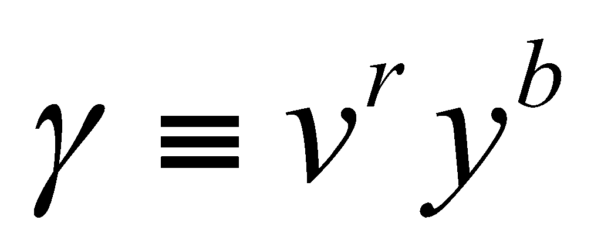
(modn)vµ nÕu ®iÒu kiÖn ®ã ®îc tho¶ m·n th× x¸c nhËn danh tÝnh cña A.
Còng nh c¸c trêng hîp tríc, viÖc chøng minh tÝnh ®Çy ®ñ cña s¬ ®å lµ rÊt ®¬n gi¶n:
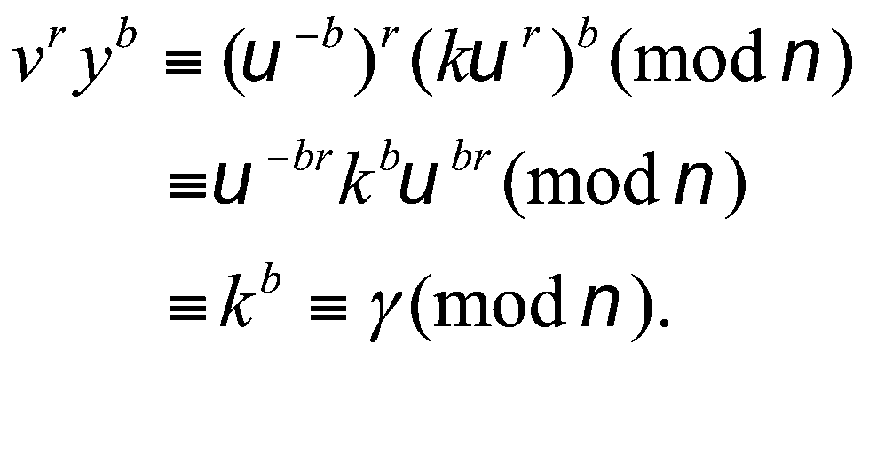
Mét ngêi kh¸c A, do kh«ng biÕt sè bÝ mËt u , nªn kh«ng thÓ tÝnh ®óng ®îc sè y ë bíc 3 cña giao thøc ®Ó ®îc B x¸c nhËn (nh lµ A) ë bíc 4, tøc kh«ng thÓ m¹o nhËn m×nh lµ A; ®ã lµ tÝnh ®óng ®¾n cña s¬ ®å.
Gi¶ sö cã mét ngêi O cã thÓ thùc hiÖn th«ng suèt giao thøc x¸c nhËn ®Ó cã thÓ ®îc m¹o nhËn lµ A, ch¼ng h¹n Ýt nhÊt hai lÇn. §iÒu ®ã cã nghÜa lµ O biÕt ®îc hai sè r1 r2 vµ hai sè y1, y2 sao cho
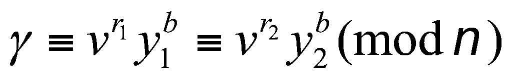
Gi¶ thiÕt r1 r2, khi ®ã ta cã
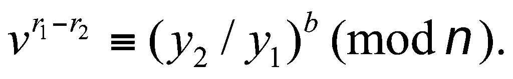
Do 0 r1 -r2 b vµ b lµ sè nguyªn tè nªn gcd(r1 -r2, b) =1, cã thÓ tÝnh ®îc dÔ dµng t =(r1 -r2)-1modb , vµ cã
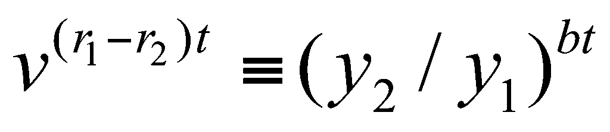
Do t =(r1 -r2)-1modb nªn ta cã
(r1 -r2)t =lb +1
víi l lµ mét sè nguyªn d¬ng nµo ®ã, v× vËy,
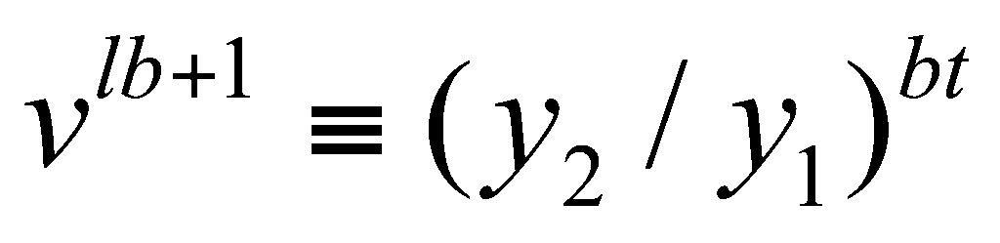
hay lµ
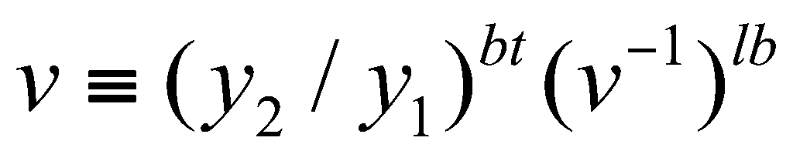
N©ng c¶ hai vÒ lªn luü thõa bËc b -1mod (n), ta ®îc
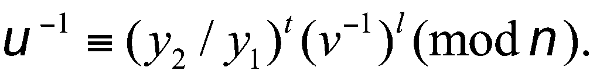
cuèi cïng, tÝnh nghÞch ®¶o cña hai vÕ theo modn ta ®îc
u
=
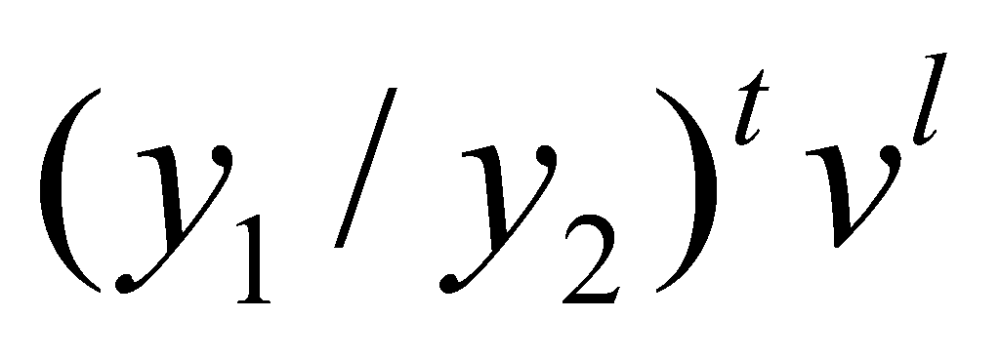
Nh vËy, O tÝnh ®îc sè bÝ mËt u trong thêi gian ®a thøc! Theo gi¶ thiÕt, ®iÒu ®ã kh«ng thÓ xÈy ra, v× vËy, gi¶ thiÕt vÒ viÖc O cã thÓ thùc hiÖn th«ng suèt giao thøc x¸c nhËn ®Ó ®îc m¹o nhËn danh tÝnh lµ A lµ kh«ng ®óng; s¬ ®å xng danh ®îc chøng minh lµ an toµn.
ThÝ dô: Gi¶ sö TA chän p =467, q =479, nh vËy n =223693, TA còng chän thªm b =503.
Gi¶ sö A chän sè bÝ mËt u =101576, vµ tÝnh
v =(101576-1)503 mod223693
= 89888.
TA t¹o ch÷ ký s =sigTA(ID(A), v) vµ cÊp cho A chøng chØ
C(A) = (ID(A),v,s).
Gi¶ thiÕt A muèn xng danh víi B, A chän k =187485, vµ göi cho B gi¸ trÞ =187485503mod223693 =24412. B dïng thuËt to¸n kiÓm thö verTA ®Ó thö ®iÒu kiÖn verTA(ID(A),v,s) = ®óng, sau ®ã göi ®Õn A c©u hái r = 375. A sÏ tr¶ lêi l¹i b»ng
y =187485.101576375 mod223693
= 93725.
B thö ®iÒu kiÖn (modn), trong trêng hîp nµy lµ
24412 89888375. 93725503(mod 223693),
®ång d thøc ®ã ®óng. VËy B x¸c nhËn danh tÝnh cña A.
B©y giê ta l¹i gi¶ thiÕt lµ O biÕt ®îc hai sè r1=401, r2=375 vµ c¸c sè t¬ng øng y1=103386 vµ y2=93725. O biÕt r»ng
v 401.103386b v 375. 93725b (modn).
O sÏ tÝnh
t =(r1- r2)-1 modb = (401-375)-1mod503 =445,
sau ®ã tÝnh ®îc
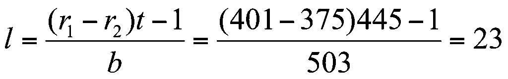
Cuèi cïng, O sÏ t×m ®îc gi¸ trÞ bÝ mËt u lµ
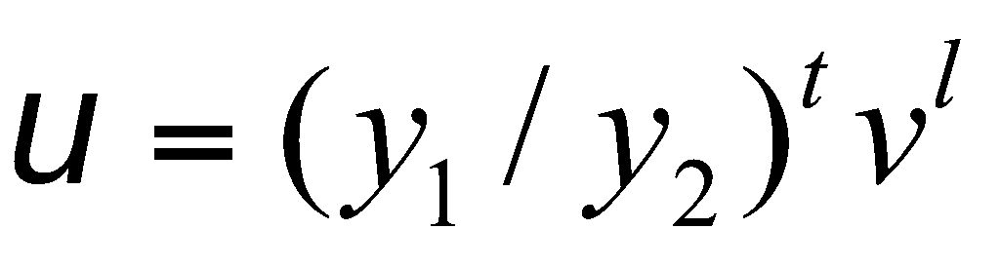
= (103386/93725)445.8988823 mod 223693
= 101576,
lµ sè bÝ mËt cña A.
Chó ý: S¬ ®å xng danh Guillou-Quisquater, còng nh c¸c s¬ ®å Schnorr vµ Okamoto tríc ®ã, ®Òu cÇn cã chøng chØ cña TA cho mçi ngêi tham gia. Ta cã thÓ thay ®æi chót Ýt ®Ó biÕn s¬ ®å xng danh ®ã thµnh mét s¬ ®å xng danh dùa vµo danh tÝnh mµ kh«ng cÇn cã chøng chØ nh sau: S¬ ®å dïng mét hµm b¨m c«ng khai h , vµ thay cho viÖc cÊp chøng chØ C(A) cho ngêi tham gia A, TA sÏ cÊp cho A danh tÝnh ID(A) cïng mét sè u ®îc tÝnh bëi c«ng thøc
u =(h(ID(A))-1)a modn .
(a lµ mét sè mò bÝ mËt cña TA). Sè u ®îc A gi÷ riªng cho m×nh. Khi A cÇn xng danh víi B, A vµ B cïng thùc hiÖn mét giao thøc x¸c nhËn danh tÝnh sau ®©y:
A chän mét sè ngÉu nhiªn k, 0 k n -1, vµ tÝnh
= k b modn ,
råi göi ID(A) vµ cho B.
2. B tÝnh v =h(ID(A)); chän mét sè ngÉu nhiªn r (0 r 1) vµ göi r cho A.
3. A tÝnh y =kur modn vµ göi y cho B.
4. B thö ®iÒu kiÖn v ryb (modn) ®Ó x¸c nhËn danh tÝnh cña A.
Khi xng danh theo giao thøc nãi trªn víi B, A chØ cÇn biÕt gi¸ trÞ u lµ mét gi¸ trÞ ®îc tÝnh bëi TA (vµ chØ TA tÝnh ®îc gi¸ trÞ ®ã). O kh«ng thÓ gi¶ m¹o danh tÝnh cña A v× O kh«ng biÕt gi¸ trÞ u.
6.5. Giao thøc Feige-Fiat-Shamir.
Giao thøc xng danh Feige-Fiat-Shamir mµ ta sÏ giíi thiÖu trong tiÕt nµy thêng ®îc xem lµ mét giao thøc ®iÓn h×nh, trong ®ã mét chñ thÓ tù xng danh b»ng c¸ch chøng minh lµ m×nh biÕt mét bÝ mËt víi viÖc dïng mét kiÓu chøng minh mµ ta sÏ gäi lµ chøng minh kh«ng lé tri thøc (zero-knowledge proof), tøc lµ trong chøng minh ®ã kh«ng tiÕt lé bÊt cø mét th«ng tin dï nhá nµo liªn quan ®Õn gi¸ trÞ bÝ mËt cña chñ thÓ xng danh. ë ®©y,thuËt ng÷ “tri thøc” chØ ®îc dïng víi mét nghÜa rÊt h¹n chÕ ®Ó nãi vÒ viÖc biÕt mét bÝ mËt cña mét chñ thÓ, mµ c¸i biÕt nµy thêng khi chØ lµ biÕt mét bit (0 hoÆc 1, ®óng hoÆc sai), kh«ng lé tri thøc lµ kh«ng tiÕt lé c¸i biÕt vÒ mét bit ®ã. Trong tiÕt sau ta sÏ ®Ò cËp ®Õn c¸c “chøng minh kh«ng lé tri thøc” víi mét nghÜa réng h¬n, khi ®ã “tri thøc” sÏ cã nghÜa lµ biÕt chøng minh cña mét bµi to¸n, vµ chøng minh kh«ng lé tri thøc sÏ cã nghÜa lµ thuyÕt phôc mét ®èi t¸c tin r»ng m×nh biÕt c¸ch chøng minh cña bµi to¸n ®ã, vµ ngoµi viÖc bÞ thuyÕt phôc ®ã ra th× ®èi t¸c kh«ng khai th¸c ®îc bÊt cø th«ng tin g× kh¸c ®Ó cã thÓ lÆp l¹i chøng minh ®ã c¶.
B©y giê ta trë l¹i víi viÖc tr×nh bµy giao thøc xng danh Feige-Fiat-Shamir.
ë bíc chuÈn bÞ, trung t©m ®îc uû th¸c (TA) c«ng bè mét m«®uyn chung n =pq cho mäi ngêi tham gia, sau khi ®· chän vµ gi÷ bÝ mËt hai sè nguyªn tè lín p vµ q , mçi sè nµy ®Òu ®ång d víi 3 theo mod4. Bµi to¸n ph©n tÝch n thµnh thõa sè ®îc gi¶ thiÕt lµ cùc khã. Mét sè nguyªn n nh trªn lµ sè nguyªn Blum, víi -1 lµ mét gi¶ thÆng d bËc hai theo modn (tøc lµ mét bÊt thÆng d bËc hai cã ký hiÖu Jacobi b»ng +1).
Mçi ngêi tham gia thùc hiÖn c¸c viÖc chuÈn bÞ nh sau:
- Chän k sè nguyªn ngÉu nhiªn s1, s2,...,sk trong tËp {1,...,n -1}, vµ k bit ngÉu nhiªn b1, b2,..., bk .
-
TÝnh
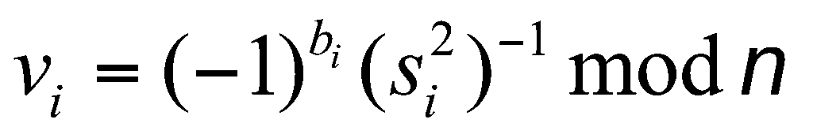
- Mçi chñ thÓ A ®¨ng ký víi TA kho¸ c«ng khai (v1,..., vk ; n) cña m×nh, vµ gi÷ cho riªng m×nh kho¸ bÝ mËt (s1 ,...,sk ) .
Ho¹t ®éng cña giao thøc xng danh sÏ gåm viÖc thùc hiÖn t vßng hái-®¸p sau ®©y; B sÏ chÊp nhËn danh tÝnh cña A nÕu tÊt c¶ t vßng ®ã ®Òu thµnh c«ng. Gi¶ thiÕt B cã kho¸ c«ng khai cña A. Mçi vßng gåm c¸c bíc :
(a) A chän sè nguyªn ngÉu nhiªn r (1 r n –1), vµ mét bit ngÉu nhiªn b , tÝnh x = (-1)b.r2 mod n ; vµ göi x cho B nh mét b»ng chøng.
(b) B göi cho A mét vect¬ gåm k bit ngÉu nhiªn (e1,..., ek ) nh mét c©u hái hay lêi th¸ch ®è.
(c)
A tÝnh vµ göi cho B y
=
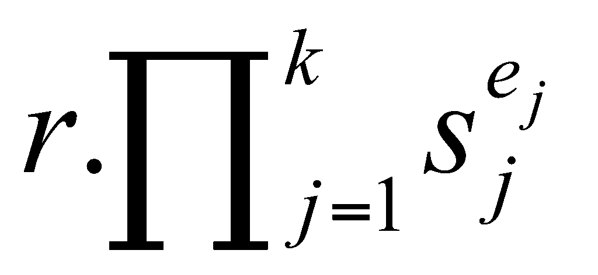
(d)
B tÝnh
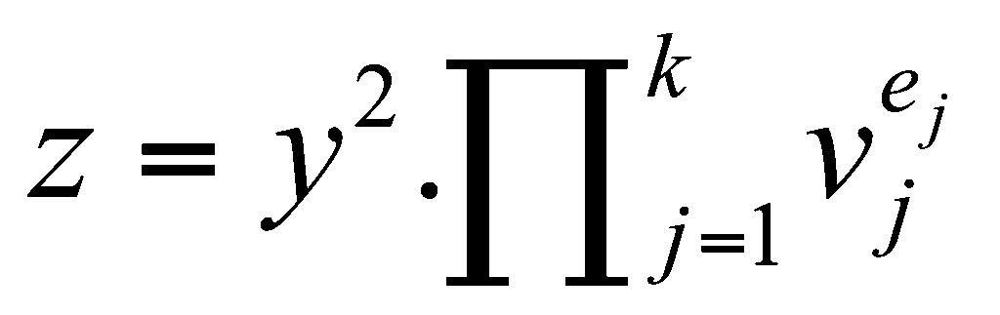
Chó ý r»ng trong giao thøc trªn ®©y,c¸c sè k vµ t lµ c¸c tham sè an toµn nh sÏ ®îc gi¶i thÝch trong mét ®o¹n sau.
ThÝ dô : Gi¶ sö trung t©m TA chän p =683 vµ q =811, vµ c«ng bè n = pq = 553913. Chän c¸c tham sè k =3, t =1.
Gi¶ sö A chän s1 =157, s2 =43215, s3 =4646, vµ 3 bit b1=1, b2=0, b3=1. TÝnh ra v1=441845, v2=338402, v3=124423.
Kho¸ c«ng khai cña A lµ (441845, 338402, 124423; 553913), kho¸ bÝ mËt lµ (157, 43215, 4646).
Giao thøc xng danh cña A cã thÓ ®îc thùc hiÖn nh sau:
A chän r =1279, b =1, tÝnh ®îc x =25898, vµ göi cho B,
B ra lêi th¸ch ®è (e1, e2, e3)=(0,0,1).
A tr¶ lêi l¹i b»ng y=rs3 modn = 403104.
B tÝnh z = y 2v3modn = 25898 vµ thö ®óng z =+x vµ z 0 .
Do ®ã B chÊp nhËn danh tÝnh cña A.
§èi víi giao thøc Feige-Fiat-Shamir, ngêi ta chøng minh ®îc r»ng kh¶ n¨ng thµnh c«ng cña viÖc m¹o xng danh tÝnh cã x¸c suÊt nhiÒu l¾m lµ 2-kt , do ®ã nÕu chän k vµ t sao cho kt =20 ch¼ng h¹n th× x¸c suÊt ®ã lµ kho¶ng 1 phÇn triÖu, vµ nÕu kt =40 th× x¸c suÊt ®ã lµ kho¶ng 1 phÇn triÖu triÖu, cã thÓ coi lµ kh«ng thÓ xÈy ra. TÝnh an toµn cña giao thøc dùa trªn ®é khã cña bµi to¸n khai c¨n bËc hai theo m«®uyn lµ mét hîp sè lín khã ph©n tÝch thµnh thõa sè. Giao thøc còng cã tÝnh chÊt lµ mét chøng minh kh«ng lé tri thøc theo nghÜa lµ nhê biÕt kho¸ bÝ mËt mµ A thùc hiÖn viÖc tr¶ lêi trong c¸c vßng hái-®¸p mét c¸ch tr«i ch¶y, nhng toµn bé c¸c tr¶ lêi cña A kh«ng ®Ó lé bÊt kú mét chót bÝ mËt nµo ®Ó ngêi kh¸c (kÓ c¶ B) cã thÓ khai th¸c nh»m ph¸t hiÖn (kho¸) bÝ mËt cña A.
6.6. PhÐp chøng minh kh«ng lé tri thøc.
(zero-knowledge proof)
Nh ®· giíi thiÖu trong phÇn më ®Çu 6.1, bµi to¸n xng danh vµ x¸c nhËn danh tÝnh ®ãng mét vai trß cã ý nghÜa to lín trong mäi ho¹t ®éng giao dÞch cña x· héi. §Ó viÖc xng danh ®îc an toµn, mét yªu cÇu quan träng lµ cÇn chèng ®îc viÖc m¹o xng danh tÝnh cña ngêi kh¸c trong giao dÞch. Khi viÖc giao dÞch ®îc ®iÖn tö ho¸ mét c¸ch réng r·i, yªu cÇu an toµn ®Æt ra nhiÒu vÊn ®Ò cÇn ®îc gi¶i quyÕt b»ng nh÷ng gi¶i ph¸p khoa häc. Nh÷ng gi¶i ph¸p ®¬n gi¶n vµ th« s¬ nh tr×nh tªn tuæi, mËt hiÖu (password),... kh«ng cßn an toµn, v× khã gi÷ ®îc bÝ mËt lµm cho ngêi kh¸c cã thÓ dÔ dµng b¾t chíc ®Ó m¹o xng. Trong c¸c phÇn trªn cña ch¬ng nµy, ta ®· tr×nh bµy mét sè s¬ ®å xng danh dùa vµo c¸c giao thøc hái-®¸p, ngêi kiÓm thö ®a ra c¸c c©u hái, vµ ngêi xng danh tr¶ lêi, dùa trªn c¸c tr¶ lêi ®ã ngêi kiÓm thö hoÆc ®a thªm nh÷ng c©u hái míi, hoÆc chÊp nhËn (hay b¸c bá) danh tÝnh cña ngêi xng danh. PhÇn lín c¸c giao thøc hái-®¸p trong c¸c s¬ ®å xng danh ®ã ®Òu cã Ýt nhiÒu tÝnh chÊt cña mét chøng minh kh«ng lé tri thøc, dï tri thøc mµ ta ®Ò cËp ®Õn chØ lµ viÖc biÕt hay kh«ng biÕt mét bÝ mËt (cña kho¸ xng danh). Kh¸i niÖm chøng minh kh«ng lé tri thøc ban ®Çu xuÊt ph¸t tõ viÖc nghiªn cøu c¸c s¬ ®å xng danh, vÒ sau ®· ®îc më réng cho nhiÒu lo¹i bµi to¸n kh¸c.
C¸c bµi to¸n mµ ta sÏ t×m kiÕm cho chóng nh÷ng “chøng minh kh«ng lé tri thøc” thêng lµ nh÷ng bµi to¸n quyÕt ®Þnh, ®ã lµ nh÷ng bµi to¸n ®îc x¸c ®Þnh bëi mét tËp d÷ liÖu vµ mét tÝnh chÊt , vµ néi dung cña bµi to¸n lµ xÐt xem víi mçi x , x cã tÝnh chÊt hay kh«ng. Mét sè líp c¸c bµi to¸n quyÕt ®Þnh nh vËy ®· ®îc xÐt ®Õn khi ta nghiªn cøu vÒ ®é phøc t¹p tÝnh to¸n trong ch¬ng II. Tham gia vµo mét giao thøc chøng minh gåm cã hai ngêi: mét lµ ngêi chøng minh (ký hiÖu lµ P-prover) vµ mét lµ ngêi kiÓm thö (ký hiÖu V- verifier). Giao thøc gåm c¸c c©u hái- ®¸p gi÷a V vµ P, thêng lµ V ®a ra c¸c c©u hái hay th¸ch ®è, vµ V ®a ra c¸c c©u tr¶ lêi. Gi¶ thö P biÕt ch¾c ch¾n r»ng x cã tÝnh chÊt , P cã thÓ dïng mét giao thøc chøng minh ®Ó thuyÕt phôc V tin r»ng x cã tÝnh chÊt , vµ mét giao thøc chøng minh ®îc gäi lµ kh«ng lé tri thøc, nÕu ngoµi viÖc thuyÕt phôc ®îc V tin lµ x cã tÝnh chÊt ra, P kh«ng ®Ó lé bÊt cø mét th«ng tin nµo cã thÓ gióp ngêi kh¸c (kÓ c¶ V) dïng ®Ó chøng minh x cã tÝnh chÊt . Tríc khi ®a ra ®îc c¸c ®Þnh nghÜa to¸n häc vÒ c¸c kh¸i niÖm ®ã, ta h·y xÐt mét thÝ dô vÒ mét bµi to¸n quen thuéc lµ bµi to¸n ®¼ng cÊu graph, víi tËp d÷ liÖu lµ tËp c¸c cÆp graph (G1, G 2), vµ néi dung bµi to¸n lµ c©u hái: hai graph G1 vµ G 2 cã ®¼ng cÊu víi nhau kh«ng. Trong lý thuyÕt vÒ ®é phøc t¹p tÝnh to¸n, bµi to¸n nµy cã mét vai trß ®Æc biÖt, v× lµ mét bµi to¸n cha biÕt cã thuËt to¸n nµo víi thêi gian ®a thøc gi¶i nã hay kh«ng, nhng còng cha cã chøng minh nµo chøng tá nã lµ -®Çy ®ñ .
Díi ®©y lµ s¬ ®å t¬ng t¸c chøng minh kh«ng lé tri thøc cña bµi to¸n ®¼ng cÊu graph:
Gi¶ sö cho hai graph G1 vµ G 2 cã tËp ®Ønh {1, 2,...,n}. Gi¶ sö P biÕt G1 vµ G 2 ®¼ng cÊu víi nhau (ch¼ng h¹n do biÕt mét ho¸n vÞ trªn tËp {1, 2,...,n} sao cho G1 lµ ¶nh cña G 2 qua ho¸n vÞ ®ã).
S¬ ®å t¬ng t¸c chøng minh “G1 vµ G 2 ®¼ng cÊu” gåm m vßng hái-®¸p, mçi vßng cã 4 bíc sau ®©y:
1. P chän mét ho¸n vÞ ngÉu nhiªn cña {1, 2,...,n}, lËp graph H lµ ¶nh cña G 1 qua ho¸n vÞ , vµ göi H cho V.
V chän sè ngÉu nhiªn i {1, 2} vµ göi nã cho P.
3. P tÝnh mét ho¸n vÞ trªn {1, 2,...,n} sao cho H lµ ¶nh cña G i qua (cô thÓ, nÕu i =1 th× lÊy = , nÕu i =2 th× lÊy = . ), råi göi cho V.
4. V thö xem H cã lµ ¶nh cña Gi qua hay kh«ng.
V sÏ chÊp nhËn chøng minh cña P nÕu V thö ®óng ®iÒu kiÖn 4 ë tÊt c¶ m vßng hái-®¸p ®ã.
ThÝ dô: Ta minh ho¹ ho¹t ®éng cña giao thøc t¬ng t¸c ®Ó chøng minh sù ®¼ng cÊu cña hai graph b»ng thÝ dô díi ®©y:
Gi¶ sö G1 = (V, E1) vµ G 2 = (V,E 2) lµ hai graph víi tËp ®Ønh V ={1, 2, 3, 4} vµ c¸c tËp c¹nh E 1 ={12,13,14,34}, E 2={12,13,23,24}. Gi¶ sö P biÕt G 2 ®¼ng cÊu víi G1 qua ho¸n vÞ = {4 1 3 2}.
2
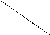
4 1 2 2 4
3 1 4 3 1 3
H G1 G2
Mét vßng cña giao thøc cã thÓ xÈy ra nh sau:
1. P chän ngÉu nhiªn ho¸n vÞ = {2 4 1 3}. Graph H sÏ cã tËp c¹nh {12,13,23,24}, lµ ¶nh cña G 1 qua . P göi H cho V.
2. V chän i =2 vµ göi cho P nh mét c©u hái.
3. P thö thÊy ho¸n vÞ = . ={3 2 1 4} ¸nh x¹ G 2 thµnh H vµ do ®ã göi cho V.
4. V thö ®óng H lµ ¶nh cña G 2 qua ho¸n vÞ . Ta kÕt luËn vßng hái-®¸p nµy ®· thµnh c«ng.
Toµn bé giao thøc gåm cã m = log2n vßng.
Nh vËy, nÕu G 1 ®¼ng cÊu víi G 2 (hay chÝnh x¸c h¬n, nÕu A biÕt G 1 ®¼ng cÊu víi G 2 ) vµ mäi qui ®Þnh ®îc t«n träng, th× giao thøc thµnh c«ng, vµ x¸c suÊt cña viÖc V chÊp nhËn chøng minh ®ã lµ 1. §ã lµ tÝnh ®Çy ®ñ cña giao thøc.
MÆt kh¸c, nÕu G1 vµ G 2 kh«ng ®¼ng cÊu víi nhau, th× c¸ch duy nhÊt ®Ó P lõa V chÊp nhËn theo giao thøc lµ ë mçi vßng hái-®¸p, P ®o¸n tríc ®óng ®îc c©u hái (sè i) mµ V sÏ ®a ra ë bíc 2, vµ do ®ã ë bíc 1, P chän ngÉu nhiªn mét ho¸n vÞ vµ göi cho V graph H lµ ¶nh cña Gi qua , råi ë bíc 3 ®Ó tr¶ lêi c©u hái (lµ sè i ) cña V, P sÏ ®¸p l¹i b»ng phÐp ho¸n vÞ = . Râ rµng lµ V chÊp nhËn c©u tr¶ lêi ®ã lµ ®óng, vµ vßng hái-®¸p ®ã thµnh c«ng. Nh vËy, P ®· lõa ®îc V mét vßng, vµ x¸c suÊt thµnh c«ng ®ã b»ng x¸c suÊt P ®o¸n tríc ®óng c©u hái mµ V sÏ ®a ra, tøc lµ kh«ng lín h¬n 1/2. VËy nÕu G1 vµ G 2 kh«ng ®¼ng cÊu víi nhau th× kh¶ n¨ng V bÞ lõa mµ tin r»ng G1 vµ G 2 ®¼ng cÊu lµ cã x¸c suÊt kh«ng qóa 2-m = 2-logn = 1/n , mét gi¸ trÞ kh«ng ®¸ng kÓ cã thÓ bá qua v× n rÊt lín. §iÒu ®ã còng nãi r»ng nÕu P kh«ng biÕt G1 vµ G 2 ®¼ng cÊu víi nhau th× P còng kh«ng thÓ lîi dông giao thøc ®ã mµ lõa V r»ng P biÕt G1 vµ G 2 ®¼ng cÊu. §ã lµ tÝnh ®óng ®¾n cña giao thøc.
B©y giê ta nãi ®Õn tÝnh kh«ng lé tri thøc cña giao thøc nãi trªn. Ta thÊy r»ng thùc hiÖn mçi vßng hái-®¸p cña giao thøc, tÊt c¶ nh÷ng g× mµ P ®a ®Õn cho V lµ mét b¶n sao H ®¼ng cÊu víiG1 vµ G 2, vµ mét ho¸n vÞ thùc hiÖn sù ®¼ng cÊu tõ G1 tíi H hoÆc tõ G 2 tíi H (nhng kh«ng ph¶i c¶ hai !). Tõ c¸c th«ng tin ®ã kh«ng ®ñ ®Ó V thiÕt lËp ®îc ngay mét phÐp ®¼ng cÊu cña G1 vµ G 2 (ta chó ý ho¸n vÞ mµ P chuyÓn cho V lµ = hoÆc = . , tõ ®ã kh«ng dÔ g× t×m ®îc ). Mét c¸ch trùc gi¸c, ®iÒu ®ã chøng tá lµ giao thøc kh«ng lé tri thøc. §Ó cã mét ®Þnh nghÜa to¸n häc cho kh¸i niÖm kh«ng lé tri thøc, ta xÐt kü h¬n lËp luËn trªn ®©y.
Ta h·y xem qua mét chøng minh t¬ng t¸c nh trªn P vµ V®Ó l¹i nh÷ng th«ng tin g×. Ngoµi th«ng tin vÒ hai graph G1 vµ G 2, ë mçi vßng hái-®¸p, P vµ V ®· trao ®æi c¸c th«ng tin vÒ mét graph H, mét c©u hái i , vµ mét tr¶ lêi . Nh vËy, ta cã thÓ ®Þnh nghÜa mét b¶n ghi T cña mét chøng minh t¬ng t¸c lµ
T = ((G1 ,G 2); (H 1,i1,1) ;....; (Hm,im ,m)).
Th«ng tin vÒ mét chøng minh t¬ng t¸c ®îc chøa ®ùng ®Çy ®ñ trong mét b¶n ghi T . B©y giê ta chó ý r»ng mét b¶n ghi còng cã thÓ ®îc t¹o ra mét c¸ch gi¶ m¹o. Thùc vËy, ta cã thÓ chän ngÉu nhiªn mét sè i {1, 2}, mét ho¸n vÞ , sau ®ã tÝnh H lµ ¶nh ®¼ng cÊu cña Gi qua . Thùc hiÖn m lÇn nh vËy, ta ®îc m bé ba (H,i,), vµ cïng víi (G1 ,G 2) ta sÏ t¹o ®îc mét b¶n ghi gi¶ m¹o, v× ®ã kh«ng ph¶i lµ mét b¶n ghi trung thùc theo viÖc thùc hiÖn thùc mét chøng minh ®óng theo giao thøc t¬ng t¸c, nhng kh«ng cã c¸ch nµo ®Ó ph©n biÖt mét giao thøc hîp thøc víi mét giao thøc gåm c¸c b¶n ghi gi¶ m¹o. ThuËt to¸n t¹o ra cac b¶n ghi gi¶ m¹o ®îc gäi lµ mét m« pháng. B©y giê ta ®· cã thÓ ®a ra mét ®Þnh nghÜa cho kh¸i niÖm kh«ng lé tri thøc nh sau:
Gi¶ sö cã mét hÖ chøng minh t¬ng t¸c ®èi víi bµi to¸n quyÕt ®Þnh , vµ mét m« pháng S 1, vµ x lµ mét d÷ liÖu cña bµi to¸n cã tr¶ lêi “®óng” ®èi víi c©u hái . Ký hiÖu (x) lµ tËp tÊt c¶ c¸c b¶n ghi hîp thøc cã thÓ cã, vµ (x) lµ tËp hîp tÊt c¶ c¸c b¶n ghi gi¶ m¹o cã thÓ sinh ra bëi S. Gi¶ thiÕt r»ng (x) =(x). Víi mçi T (x) ký hiÖu p(T ) lµ x¸c suÊt cña viÖc T lµ b¶n ghi sinh ra tõ mét chøng minh t¬ng t¸c, vµ p (T ) lµ x¸c suÊt cña viÖc T lµ mét b¶n ghi gi¶ m¹o sinh ra bëi m« pháng S . NÕu p(T ) = p (T ) víi mäi T (x) , tøc lµ c¸c ph©n bè x¸c suÊt trªn (x) vµ (x) lµ trïng nhau, th× ta nãi r»ng hÖ chøng minh t¬ng t¸c cña ta lµ kh«ng lé tri thøc hoµn h¶o (perfect zero-knowledge) ®èi víi V.
§èi víi bµi to¸n ®¼ng cÊu hai graph vµ víi s¬ ®å chøng minh t¬ng t¸c kÓ trªn, ngêi ta chøng minh ®îc r»ng hai ph©n bè x¸c suÊt trªn (x) vµ (x) trïng nhau, do ®ã, víi ®Þnh nghÜa cña kh¸i niÖm kh«ng lé tri thøc hoµn h¶o, ta cã thÓ kÕt luËn : §èi víi bµi to¸n ®¼ng cÊu hai graph, cã mét s¬ ®å t¬ng t¸c chøng minh kh«ng lé tri thc hoµn h¶o.
B©y giê ta giíi thiÖu thªm díi ®©y mét s¬ ®å t¬ng t¸c chøng minh kh«ng lé tri thøc ®èi víi bµi to¸n thÆng d bËc hai, lµ mét bµi to¸n -®Çy ®ñ.
Cho mét sè nguyªn n lµ tÝch cña hai sè nguyªn tè lín p vµ q ®îc gi÷ bÝ mËt. Gi¶ thiÕt P biÕt x lµ mét thÆng d bËc hai theo modn, vµ u lµ mét c¨n bËc hai cña nã (tøc u 2 x (modn)).S¬ ®å chøng minh t¬ng t¸c gåm m vßng, mçi vßng gåm 4 bíc sau ®©y:
1. P chän ngÉu nhiªn mét sè v
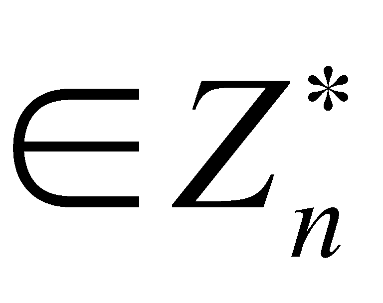
2. V chän ngÉu nhiªn mét sè
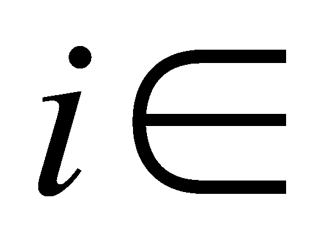
P tÝnh z = u iv modn, vµ göi z cho V.
V thö ®iÒu kiÖn
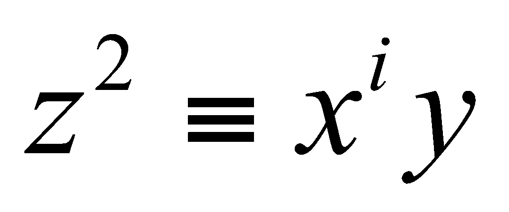
(modn) .NÕu qua m vßng, V ®Òu thö ®óng ®iÒu kiÖn trªn th× V chÊp nhËn chøng minh cña P r»ng x lµ thÆng d bËc hai theo modn.
Giao thøc chøng minh t¬ng t¸c nµy còng cã c¸c tÝnh chÊt ®Çy ®ñ, ®óng ®¾n, vµ lµ kh«ng lé tri thøc, nhng cha ph¶i lµ kh«ng lé tri thøc hoµn h¶o. ViÖc nghiªn cøu c¸c s¬ ®å t¬ng t¸c chøng minh kh«ng lé tri thøc lµ mét chñ ®Ò ®îc nhiÒu ngêi quan t©m trong vµi thËp niªn võa qua, vµ ®· thu ®îc nhiÒu kÕt qu¶ lý thó, trong ®ã lý thó nhÊt cã lÏ lµ c¸c kÕt qu¶ liªn quan ®Õn c¸c bµi to¸n -®Çy ®ñ. Ngêi ta ®· chøng tá r»ng kh«ng cã c¸c chøng minh kh«ng lé tri thøc hoµn h¶o ®èi víi c¸c bµi to¸n -®Çy ®ñ; tuy nhiªn, nÕu kh«ng ®ßi hái chÆt chÏ ®iÒu kiÖn “kh«ng lé tri thøc hoµn h¶o”, mµ chØ ®ßi hái mét ®iÒu kiÖn nhÑ h¬n chót Ýt vÒ “kh«ng lé tri thøc tÝnh to¸n” (computational zero-knowledge), th× ngêi ta chøng minh ®îc r»ng ®èi víi nhiÒu bµi to¸n -®Çy ®ñ nh bµi to¸n thÆng d bËc hai theo modn ë trªn hay bµi to¸n t« ba mÇu mét graph lµ cã thÓ x©y dùng t¬ng øng c¸c s¬ ®å t¬ng t¸c chøng minh kh«ng lé tri thøc tÝnh to¸n. Råi tõ ®ã, do mäi bµi to¸n trong líp ®Òu cã thÓ qui dÉn trong thêi gian ®a thøc vÒ mét bµi to¸n -®Çy ®ñ, ch¼ng h¹n bµi to¸n t« ba mµu mét graph, nªn cã thÓ chøng minh ®îc lµ ®èi víi mäi bµi to¸n trong líp ®Òu cã mét s¬ ®å t¬ng t¸c chøng minh kh«ng lé tri thøc (tÝnh to¸n).
Kh¸i niÖm kh«ng lé tri thøc tÝnh to¸n chØ kh¸c kh¸i niÖm kh«ng lé tri thøc hoµn h¶o ë mét ®iÓm lµ nÕu trong ®Þnh nghÜa cña “kh«ng lé tri thøc hoµn h¶o” ta ®ßi hái hai ph©n bè x¸c suÊt trªn (x) vµ (x) trïng nhau, th× ®èi víi kh¸i niÖm “kh«ng lé tri thøc tÝnh to¸n”, ta chØ ®ßi hái hai ph©n bè x¸c suÊt ®ã lµ “kh«ng ph©n biÖt ®ù¬c” theo mét nghÜa t¬ng tù nh “kh«ng -ph©n biÖt ®îc” mµ ta ®· xÐt ®Õn trong môc 4.6.1, ch¬ng IV.
CH¦¥NG VII
VÊn ®Ò ph©n phèi kho¸
vµ tho¶ thuËn kho¸
7.1. Qu¶n trÞ kho¸ trong c¸c m¹ng truyÒn tin.
Trong c¸c ch¬ng tríc, ta ®· lµm quen víi c¸c ph¬ng ph¸p lËp mËt m· vµ c¸c bµi to¸n quan träng kh¸c liªn quan ®Õn viÖc truyÒn tin b¶o mËt trªn c¸c m¹ng truyÒn tin c«ng céng nãi chung. Ta còng ®· thÊy r»ng c¸c hÖ mËt m· kho¸ c«ng khai cã nhiÒu u viÖt h¬n c¸c hÖ mËt m· kho¸ ®èi xøng trong viÖc lµm nÒn t¶ng cho c¸c gi¶i ph¸p an toµn th«ng tin, vµ ®Æc biÖt nÕu ®èi víi c¸c hÖ mËt m· kho¸ ®èi xøng viÖc thùc hiÖn ®ßi hái nh÷ng kªnh bÝ mËt ®Ó chuyÓn kho¸ hoÆc trao ®æi kho¸ gi÷a c¸c ®èi t¸c, th× vÒ nguyªn t¾c, ®èi víi c¸c hÖ mËt m· kho¸ c«ng khai, kh«ng cÇn cã nh÷ng kªnh bÝ mËt nh vËy, v× c¸c kho¸ c«ng khai cã thÓ ®îc truyÒn hoÆc trao ®æi cho nhau mét c¸ch c«ng khai qua c¸c kªnh truyÒn tin c«ng céng. Tuy nhiªn, trªn thùc tÕ, ®Ó b¶o ®¶m cho c¸c ho¹t ®éng th«ng tin ®îc thËt sù an toµn, kh«ng ph¶i bÊt cø th«ng tin nµo vÒ c¸c kho¸ c«ng khai cña mét hÖ mËt m·, cña mét thuËt to¸n kiÓm thö ch÷ ký, cña mét giao thøc x¸c nhËn th«ng b¸o hay x¸c nhËn danh tÝnh, v.v... còng ph¸t c«ng khai mét c¸ch trµn lan trªn m¹ng c«ng céng, mµ dÉu lµ c«ng khai nhng ngêi ta còng mong muèn lµ nh÷ng ai cÇn biÕt th× míi nªn biÕt mµ th«i. Do ®ã, dÉu lµ dïng c¸c hÖ cã kho¸ c«ng khai, ngêi ta còng muèn cã nh÷ng giao thøc thùc hiÖn viÖc trao ®æi kho¸ gi÷a nh÷ng ®èi t¸c thùc sù cã nhu cÇu giao lu th«ng tin víi nhau, kÓ c¶ trao ®æi kho¸ c«ng khai. ViÖc trao ®æi kho¸ gi÷a c¸c chñ thÓ trong mét céng ®ång nµo ®ã cã thÓ ®îc thiÕt lËp mét c¸ch tù do gi÷a bÊt cø hai ngêi nµo khi cã nhu cÇu trao ®æi th«ng tin, hoÆc cã thÓ ®îc thiÕt lËp mét c¸ch t¬ng ®èi l©u dµi trong mét thêi h¹n nµo ®ã trong c¶ céng ®ång víi sù ®iÒu phèi cña mét c¬ quan ®îc uû th¸c (mµ ta ký hiÖu lµ TA-trusted authority). ViÖc trao ®æi kho¸ trong trêng hîp thø nhÊt ta gäi ®¬n gi¶n lµ tho¶ thuËn kho¸, cßn trong trêng hîp thø hai ta gäi lµ ph©n phèi kho¸ , TA lµ n¬i thùc hiÖn viÖc ph©n phèi, còng tøc lµ n¬i qu¶n trÞ kho¸. ViÖc tho¶ thuËn kho¸ nãi chung kh«ng cÇn cã sù tham gia cña mét TA nµo vµ chØ cã thÓ xÈy ra khi c¸c hÖ b¶o mËt mµ ta sö dông lµ hÖ cã kho¸ c«ng khai, cßn viÖc ph©n phèi kho¸ th× cã thÓ xÈy ra ®èi víi c¸c trêng hîp sö dông c¸c hÖ kho¸ ®èi xøng còng nh c¸c hÖ cã kho¸ c«ng khai. ViÖc ph©n phèi kho¸ víi vai trß qu¶n trÞ kho¸ cña mét TA lµ mét viÖc b×nh thêng, ®· tån t¹i tõ rÊt l©u tríc khi cã c¸c hÖ mËt m· kho¸ c«ng khai. Ta sÏ b¾t ®Çu víi viÖc giíi thiÖu mét vµi hÖ ph©n phèi kho¸ nh vËy, råi tiÕp sau sÏ giíi thiÖu mét sè hÖ ph©n phèi hoÆc trao ®æi kho¸ khi dïng c¸c s¬ ®å an toµn vµ b¶o mËt cã kho¸ c«ng khai.
7. 2. Mét sè hÖ ph©n phèi kho¸.
7. 2.1. S¬ ®å ph©n phèi kho¸ Blom.
Gi¶ sö ta cã mét m¹ng gåm cã n ngêi dïng, vµ mçi ngêi dïng ®ã ®Òu cã nhu cÇu trao ®æi th«ng tin bÝ mËt víi mäi ngêi trong m¹ng. Gi¶ sö s¬ ®å mËt m· ®îc sö dông lµ mét s¬ ®å mËt m· kho¸ ®èi xøng (ch¼ng h¹n, DES). Toµn bé m¹ng cÇn cã
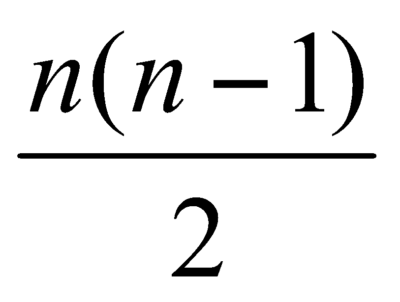
kho¸ kh¸c nhau cho chõng Êy cÆp ngêi dïng kh¸c nhau trong m¹ng. Mét c¬ quan ®îc uû th¸c TA qu¶n lý chõng Êy kho¸ vµ ph¶i chuyÓn cho mçi ngêi dïng n -1 kho¸ chung víi n -1 ngêi cßn l¹i trong m¹ng, nh vËy TA ph¶i truyÒn b»ng nh÷ng kªnh bÝ mËt tÊt c¶ lµ n (n -1) lît kho¸ ®Õn cho tÊt c¶ n ngêi dïng.Blom (1985) ®Ò nghÞ mét s¬ ®å ph©n phèi kho¸, mµ sau ®©y ta gäi lµ s¬ ®å Blom, trong trêng hîp ®¬n gi¶n nhÊt ®îc m« t¶ nh sau:
TA chän mét sè nguyªn tè p n, vµ chän cho mçi ngêi dïng A mét sè rAZp . Sè p vµ c¸c sè rA ®îc c«ng bè c«ng khai.
Sau ®ã, TA chän ba sè ngÉu nhiªn a,b,c Zp , vµ lËp ®a thøc
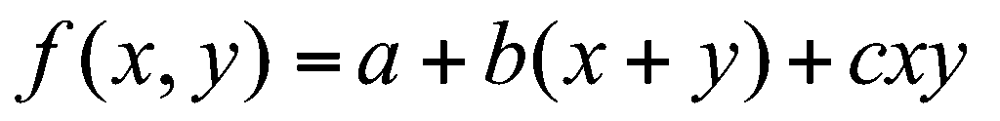
Víi
mçi ngêi dïng A, TA tÝnh
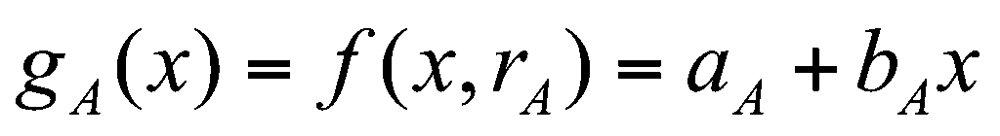 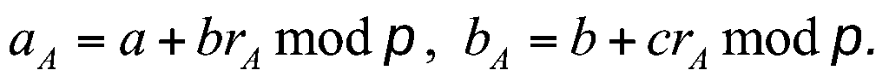 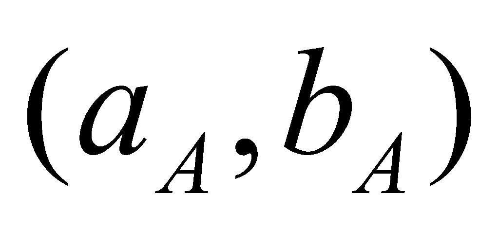 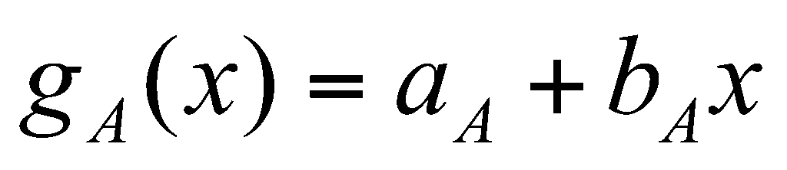
Sau khi ®· thùc hiÖn xong c¸c c«ng viÖc chuÈn bÞ ®ã, b©y giê nÕu hai ngêi dïng A vµ B muèn t¹o kho¸ chung ®Ó truyÒn tin b»ng mËt m· cho nhau, th× kho¸ chung K A,B ®ã sÏ lµ :
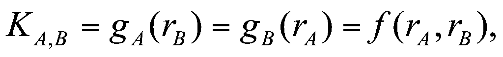
mµ mçi ngêi A vµ B tÝnh ®îc b»ng nh÷ng th«ng tin m×nh ®· cã.
Nh
vËy, theo s¬ ®å ph©n phèi nµy, TA ph©n phèi cho mçi ngêi
dïng mét phÇn bÝ mËt cña kho¸, hai ngêi dïng bÊt kú
phèi hîp phÇn bÝ mËt cña riªng m×nh víi phÇn c«ng khai cña
ngêi kia ®Ó cïng t¹o nªn kho¸ bÝ mËt chung cho hai
ngêi. S¬ ®å nµy lµ an toµn
theo nghÜa sau ®©y: BÊt
kú mét ngêi thø ba C nµo (kÓ c¶ C lµ mét ngêi
tham gia trong m¹ng) cã thÓ ph¸t hiÖn ®îc kho¸ bÝ mËt
riªng cña hai ngêi A vµ B. Thùc
vËy, dï C cã lµ ngêi tham gia trong m¹ng ®i n÷a, th×
c¸i mµ C biÕt nhiÒu l¾m lµ hai sè
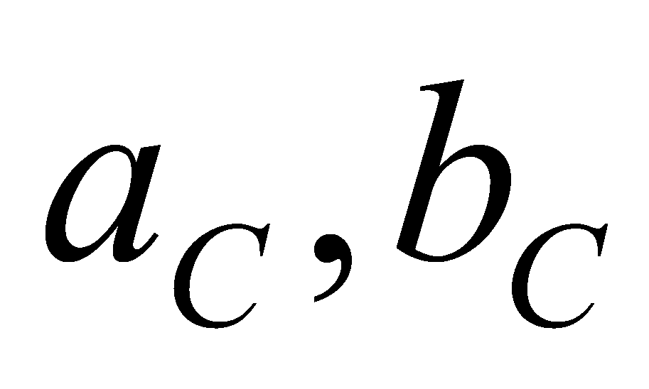
HÖ thèng ph¬ng tr×nh ®ã, nÕu xem a,b,c lµ Èn sè, cã ®Þnh thøc c¸c hÖ sè ë vÕ ph¶i lµ
,
theo gi¶ thiÕt chän c¸c sè r , ®Þnh thøc ®ã kh¸c 0, do ®ã hÖ ph¬ng tr×nh lu«n cã nghiÖm (a,b,c), tøc viÖc chÊp nhËn l lµ gi¸ trÞ cña K A,B lµ hoµn toµn cã thÓ. BÊt kú gi¸ trÞ l Zp nµo còng cã thÓ ®îc C chÊp nhËn lµ K A,B , ®iÒu ®ã ®ång nghÜa víi viÖc C kh«ng biÕt K A,B lµ sè nµo!
Tuy nhiªn, nÕu cã hai ngêi tham gia C vµ D, kh¸c A,B, liªn minh víi nhau ®Ó ph¸t hiÖn K A,B , th× l¹i rÊt dÔ dµng, v× c¶ C vµ D biÕt
Bèn ph¬ng tr×nh ®ã ®ñ ®Ó x¸c ®Þnh (a,b,c), tõ ®ã t×m ®îc K A,B .
Ta cã thÓ më réng s¬ ®å Blom nãi trªn ®Ó ®îc mét s¬ ®å Blom tæng qu¸t, trong ®ã mäi kho¸ chung K A,B cña hai ngêi dïng A vµ B lµ bÝ mËt hoµn toµn ®èi víi bÊt kú liªn minh nµo gåm k ngêi ngoµi A vµ B, nhng kh«ng cßn lµ bÝ mËt ®èi víi mäi liªn minh gåm k +1 ngêi tham gia trong m¹ng. Muèn vËy, ta chØ cÇn thay ®a thøc f (x,y ) nãi trªn b»ng mét ®a thøc ®èi xøng bËc 2k sau ®©y :
trong ®ã víi mäi i, j.
7.2.2. HÖ ph©n phèi kho¸ Kerberos.
Kerberos lµ tªn cña mét hÖ dÞch vô ph©n phèi (hay cÊp ph¸t) kho¸ phiªn (session key) cho tõng phiªn truyÒn tin b¶o mËt theo yªu cÇu cña ngíi dïng trong mét m¹ng truyÒn tin. HÖ mËt m· ®îc sö dông thêng lµ hÖ cã kho¸ ®èi xøng, ch¼ng h¹n DES.
§Ó thùc hiÖn hÖ nµy, tríc hÕt, c¬ quan ®îc uû th¸c (hay trung t©m ®iÒu phèi) TA cÇn chia sÎ mét kho¸ DES bÝ mËt KA víi mçi thµnh viªn A trong m¹ng. Sau ®ã, mçi lÇn A cã nhu cÇu truyÒn tin b¶o mËt víi mét thµnh viªn kh¸c B th× yªu cÇu TA cÊp mét kho¸ phiªn cho c¶ A vµ B. ViÖc cÊp ph¸t ®ã sÏ ®îc thùc hiÖn b»ng mét giao thøc ph©n phèi kho¸ nh sau:
1. TA chän ngÉu nhiªn mét kho¸ phiªn K, x¸c ®Þnh mét tem thêi gian T vµ mét thêi gian sèng L (nh thÕ cã nghÜa lµ kho¸ phiªn K cã gi¸ trÞ sö dông trong kho¶ng thêi gian tõ T ®Õn T +L).
TA tÝnh
vµ göi ( ) ®Õn A.
3. A dïng hµm gi¶i m· cho ®Ó thu ®îc K, T,L,ID(B). Sau ®ã tÝnh
,
vµ göi cho B.
4. B dïng c¸c hµm gi¶i m· cho m2 vµ dK cho m3 ®Ó thu ®îc K ,T, L,ID(A) vµ ID(A),T . NÕu thö thÊy hai gi¸ trÞ cña ID(A) vµ cña T trïng nhau, th× B tÝnh tiÕp
m 4 = eK (T +1)
vµ göi m4 cho A.
5. A dïng hµm gi¶i m· dK cho m4, vµ thö xem kÕt qu¶ thu ®îc cã ®óng lµ T +1 hay kh«ng.
Trong giao thøc kÓ trªn, c¸c ký hiÖu ID(A) vµ ID(B) lµ chØ cho danh tÝnh cña A vµ cña B, c¸c th«ng tin ®ã lµ c«ng khai.
Hoµn thµnh giao thøc gåm 5 bíc nãi trªn, TA (cïng víi A vµ B) ®· thùc hiÖn xong viÖc cÊp ph¸t mét kho¸ phiªn K cho hai ngêi dïng A vµ B ®Ó truyÒn tin mËt m· cho nhau. TÊt c¶ c¸c viÖc trao ®æi th«ng tin cña giao thøc ®ã ®Òu ®îc thùc hiÖn trªn c¸c kªnh c«ng céng, dï kho¸ K vÉn lµ bÝ mËt, chØ A, B (vµ TA) lµ ®îc biÕt mµ th«i. Ngoµi viÖc cÊp ph¸t kho¸, giao thøc ®ã cßn thùc hiÖn ®îc viÖc x¸c nhËn kho¸: B vµ A ®Òu tin ch¾c ®îc r»ng ®èi t¸c cña m×nh ®· thùc sù cã kho¸ K do kÕt qu¶ cña viÖc thùc hiÖn c¸c phÐp thö ë bíc 4 vµ 5; thªm n÷a, c¶ A vµ B cßn biÕt ®îc thêi h¹n cã hiÖu lùc cña kho¸.
Ph©n phèi kho¸ bÝ mËt theo giao thøc Kerberos lµ cã ®é tin cËy cao, tuy nhiªn trong thùc tÕ, viÖc sö dông nã còng ®ßi hái tèn nhiÒu thêi gian, nªn ngµy nay còng chØ ®îc dïng trong nh÷ng trêng hîp h¹n chÕ.
7. 2.3. HÖ ph©n phèi kho¸ Diffie-Hellman.
HÖ ph©n phèi kho¸ Diffie-Hellman kh«ng ®ßi hái TA ph¶i biÕt vµ chuyÓn bÊt kú th«ng tin bÝ mËt nµo vÒ kho¸ cña c¸c ngêi tham gia trong m¹ng ®Ó hä thiÕt lËp ®îc kho¸ chung bÝ mËt cho viÖc truyÒn tin víi nhau.
Trong mét hÖ ph©n phèi kho¸ Diffie-Hellman, TA chØ viÖc chän mét sè nguyªn tè lín p vµ mét phÇn tö nguyªn thuû theo modp, sao cho bµi to¸n tÝnh log trong lµ rÊt khã. C¸c sè p vµ ®îc c«ng bè c«ng khai cho mäi ngêi tham gia trong m¹ng. Ngoµi ra, TA cã mét s¬ ®å ch÷ ký víi thuËt to¸n ký (bÝ mËt) sigTA vµ thuËt to¸n kiÓm thö (c«ng khai) verTA.
Mét thµnh viªn bÊt kú A víi danh tÝnh ID(A) tuú ý chän mét sè vµ tÝnh . A gi÷ bÝ mËt vµ ®¨ng ký c¸c th«ng tin (ID(A), ) víi TA. TA cÊp cho A chøng chØ
C(A) = (ID(A), , sigTA(ID(A), )).
C¸c chøng chØ cña c¸c thµnh viªn trong m¹ng cã thÓ ®îc lu gi÷ trong mét c¬ së d÷ liÖu c«ng khai, hoÆc uû th¸c cho TA lu gi÷ vµ cung cÊp c«ng khai cho c¸c thµnh viªn mçi khi cÇn ®Õn.
Khi hai thµnh viªn A vµ B trong m¹ng cÇn cã mét kho¸ bÝ mËt chung ®Ó truyÒn tin b¶o mËt cho nhau, th× A dïng th«ng tin c«ng khai cã trong C(B) kÕt hîp víi sè bÝ mËt cña m×nh lµ ®Ó t¹o nªn kho¸
Kho¸ chung ®ã B còng t¹o ra ®îc tõ c¸c th«ng tin c«ng khai cña A vµ sè bÝ mËt cña m×nh:
§Ó b¶o ®¶m ®îc c¸c th«ng tin vÒ vµ lµ chÝnh x¸c, A vµ B cã thÓ dïng thuËt to¸n verTA ®Ó kiÓm thö ch÷ ký x¸c nhËn cña TA trong c¸c chøng chØ C(B) vµ C(A) t¬ng øng.
§é an toµn cña hÖ ph©n phèi kho¸
Diffie-Hellman ®îc b¶o ®¶m bëi ®iÒu sau ®©y: BiÕt
vµ
®Ó
tÝnh KA,B
chÝnh lµ bµi to¸n Diffie-Hellman mµ ta ®· ®Ò cËp tíi trong
môc 4.1, ch¬ng IV: biÕt
 vµ
,
tÝnh
.
§©y lµ mét bµi to¸n khã t¬ng ®¬ng bµi to¸n tÝnh
l«garit rêi r¹c hay bµi to¸n ph¸ mËt m· ElGamal.
vµ
,
tÝnh
.
§©y lµ mét bµi to¸n khã t¬ng ®¬ng bµi to¸n tÝnh
l«garit rêi r¹c hay bµi to¸n ph¸ mËt m· ElGamal.
7.3. Trao ®æi kho¸ vµ tho¶ thuËn kho¸.
7.3.1. Giao thøc trao ®æi kho¸ Diffie-Hellman.
HÖ ph©n phèi kho¸ Diffie-Hellman nãi trong môc tríc cã thÓ dÔ dµng biÕn ®æi thµnh mét giao thøc trao ®æi (hay tho¶ thuËn) kho¸ trùc tiÕp gi÷a c¸c ngêi sö dông mµ kh«ng cÇn cã sù can thiÖp cña mét TA lµm nhiÖm vô ®iÒu hµnh hoÆc ph©n phèi kho¸. Mét nhãm bÊt kú ngêi sö dông cã thÓ tho¶ thuËn cïng dïng chung mét sè nguyªn tè lín p vµ mét phÇn tö nguyªn thuû theo modp , hai ngêi bÊt kú trong nhãm A vµ B mçi khi muèn truyÒn tin b¶o mËt cho nhau cã thÓ cïng thùc hiÖn giao thøc say ®©y ®Ó trao ®æi kho¸:
A chän ngÉu nhiªn sè aA (0 aA p -2), gi÷ bÝ mËt aA, tÝnh vµ göi bA cho B.
T¬ng tù, B chän ngÉu nhiªn sè aB (0 aB p -2), gi÷ bÝ mËt aB , tÝnh vµ göi bB cho B.
A vµ B cïng tÝnh ®îc kho¸ chung
.
Giao thøc trao ®æi kho¸ Diffie-Hellman cã c¸c tÝnh chÊt sau:
Giao thøc lµ an toµn ®èi víi viÖc tÊn c«ng thô ®éng, nghÜa lµ mét ngêi thø ba, dï biÕt bA vµ bB sÏ khã mµ biÕt ®îc KA,B .
Ta biÕt r»ng bµi to¸n “biÕt bA vµ bB t×m KA,B” chÝnh lµ bµi to¸n Diffie-Hellman, vµ trong môc 7.2.3 ta cã nãi r»ng bµi to¸n ®ã t¬ng ®¬ng víi bµi to¸n ph¸ mËt m· ElGamal. B©y giê ta chøng minh ®iÒu nµy. PhÐp mËt m· ElGamal víi kho¸ K = (p,,a , ), trong ®ã , cho ta tõ mét b¶n râ x vµ mét sè ngÉu nhiªn lËp ®îc mËt m·
trong ®ã
Vµ phÐp gi¶i m· ®îc cho bëi
Gi¶ sö ta cã thuËt to¸n gi¶i bµi to¸n Diffie-Hellman. Ta sÏ dïng ®Ó ph¸ m· ElGamal nh sau: Cho mËt m· . Tríc hÕt, dïng cho vµ , ta ®îc
(y1,) =
vµ sau ®ã ta thu ®îc b¶n râ x tõ k vµ y2 nh sau :
Ngîc l¹i, gi¶ sö cã thuËt to¸n ph¸ m· ElGamal, tøc
.
¸p dông cho , ta ®îc
tøc lµ gi¶i ®îc bµi to¸n Diffie-Hellman.
Giao thøc lµ kh«ng an toµn ®èi víi viÖc tÊn c«ng chñ ®éng b»ng c¸ch ®¸nh tr¸o gi÷a ®êng, nghÜa lµ mét ngêi thø ba C cã thÓ ®¸nh tr¸o c¸c th«ng tin trao ®æi gi÷a A vµ B, ch¼ng h¹n, C thay mµ A ®Þnh göi cho B bëi ,vµ thay mµ B ®Þnh göi cho A bëi , nh vËy, sau khi thùc hiÖn giao thøc trao ®æi kho¸, A ®· lËp mét kho¸ chung víi C mµ vÉn tëng lµ víi B, ®ång thêi B ®· lËp mét kho¸ chung víi C mµ vÉn tëng lµ víi A; C cã thÓ gi¶i m· mäi th«ng b¸o mµ A tëng nhÇm lµ m×nh göi ®Õn B, còng nh mäi th«ng b¸o mµ B tëng nhÇm lµ m×nh göi ®Õn A !
A C B
Mét c¸ch kh¾c phôc kiÓu tÊn c«ng chñ ®éng nãi trªn lµ lµm sao ®Ó A vµ B cã thÓ kiÓm thö ®Ó x¸c nhËn tÝnh ®óng ®¾n cña c¸c kho¸ c«ng khai bA vµ bB .§a vµo giao thøc trao ®æi kho¸ Diffie-Hellman thªm vai trß ®iÒu phèi cña mét TA ®Ó ®îc mét hÖ ph©n phèi kho¸ Diffie-Hellman nh ë môc 7.2.3 lµ mét c¸ch kh¾c phôc nh vËy. Trong hÖ ph©n phèi kho¸ Diffie-Hellman, sù can thiÖp cña TA lµ rÊt yÕu, thùc ra TA chØ lµm mçi mét viÖc lµ cÊp chøng chØ x¸c nhËn kho¸ c«ng khai cho tõng ngêi dïng chø kh«ng ®ßi hái biÕt thªm bÊt cø mét bÝ mËt nµo cña ngêi dïng. Tuy nhiªn, nÕu cha tho¶ m·n víi vai trß h¹n chÕ ®ã cña TA, th× cã thÓ cho TA mét vai trß x¸c nhËn yÕu h¬n, kh«ng liªn quan g× ®Õn kho¸, ch¼ng h¹n nh x¸c nhËn thuËt to¸n kiÓm thö ch÷ kü cña ngêi dïng, cßn b¶n th©n c¸c th«ng tin vÒ kho¸ (c¶ bÝ mËt vµ c«ng khai) th× do c¸c ngêi dïng trao ®æi trùc tiÕp víi nhau. Víi c¸ch kh¾c phôc cã vai trß rÊt h¹n chÕ ®ã cña TA, ta ®îc giao thøc sau ®©y:
7.3.2. Giao thøc trao ®æi kho¸ DH cã chøng chØ x¸c nhËn.
Mçi ngêi dïng A cã mét danh tÝnh ID(A) vµ mét s¬ ®å ch÷ ký víi thuËt to¸n ký sigA vµ thuËt to¸n kiÓm thö verA. TA còng cã mét vai trß x¸c nhËn, nhng kh«ng ph¶i x¸c nhËn bÊt kú th«ng tin nµo liªn quan ®Õn viÖc t¹o kho¸ mËt m· cña ngêi dïng (dï lµ kho¸ bÝ mËt hay lµ kho¸ c«ng khai), mµ chØ lµ x¸c nhËn mét th«ng tin Ýt quan hÖ kh¸c nh thuËt to¸n kiÓm thö ch÷ ký cña ngêi dïng. Cßn b¶n th©n c¸c th«ng tin liªn quan ®Õn viÖc t¹o kho¸ mËt m· th× c¸c ngêi dïng sÏ trao ®æi trùc tiÕp víi nhau. TA còng cã mét s¬ ®å ch÷ ký cña m×nh, gåm mét thuËt to¸n ký sigTA vµ mét thuËt to¸n kiÓm thö (c«ng khai) verTA. Chøng chØ mµ TA cÊp cho mçi ngêi dïng A sÏ lµ
C(A) = (ID(A), verA , sigTA(ID(A), verA)).
Râ rµng trong chøng chØ ®ã TA kh«ng x¸c nhËn bÊt kú ®iÒu g× liªn quan ®Õn viÖc t¹o kho¸ cña A c¶. ViÖc trao ®æi kho¸ gi÷a hai ngêi dïng A vµ B ®îc thùc hiÖn theo giao thøc sau ®©y:
1.A chän ngÉu nhiªn sè tÝnh vµ göi bA cho B.
2. B chän ngÉu nhiªn sè tÝnh tÝnh tiÕp
vµ göi (C(B),bB , yB) cho A.
3. A tÝnh K =
dïng verB ®Ó kiÓm thö yB , dïng verTA ®Ó kiÓm thö C(B), sau ®ã tÝnh
yA = sigA(bA , bB ),
vµ göi (C(A), yA) cho B.
4.B dïng verA ®Ó kiÓm thö yA ,vµ dïng verTA ®Ó kiÓm thö C(A).
NÕu tÊt c¶ c¸c bíc ®ã ®îc thùc hiÖn vµ c¸c phÐp kiÓm thö ®Òu cho kÕt qu¶ ®óng ®¾n, th× giao thøc kÕt thóc, vµ c¶ A vµ B ®Òu cã ®îc kho¸ chung K . Do viÖc dïng c¸c thuËt to¸n kiÓm thö nªn A biÕt ch¾c gi¸ trÞ bB lµ cña B vµ B biÕt ch¾c gi¸ trÞ bA lµ cña A, lo¹i trõ kh¶ n¨ng mét ngêi C nµo kh¸c ®¸nh tr¸o c¸c gi¸ trÞ ®ã gi÷a ®êng.
7.3.3. Giao thøc trao ®æi kho¸ Matsumoto-Takashima- Imai.
Giao thøc tr×nh bµy trong môc trªn cÇn dïng ba lÇn chuyÓn tin qua l¹i ®Ó thiÕt lËp mét kho¸ chung. C¸c t¸c gi¶ NhËt Matsumoto, Takashima vµ Imai ®Ò nghÞ mét c¶i tiÕn ®Ó chØ dïng mét giao thøc gåm hai lÇn chuyÓn tin (mét tõ A ®Õn B vµ mét tõ B ®Õn A) ®Ó tho¶ thuËn kho¸ nh sau:
Ta gi¶ thö r»ng tríc khi thùc hiÖn giao thøc, TA ®· ký cÊp chøng chØ cho mçi ngêi dïng A theo c¸ch lµm ë môc 7.2.3:
C(A) = (ID(A), , sigTA(ID(A), )),
vµ thuËt to¸n kiÓm thö ch÷ ký verTA cña TA lµ c«ng khai. Trong giao thøc nµy, c¸c bA kh«ng trùc tiÕp t¹o nªn c¸c kho¸ mËt m· cho truyÒn tin, mµ víi mçi phiªn truyÒn tin b¶o mËt, kho¸ phiªn (sesion key) sÏ ®îc t¹o ra cho tõng phiªn theo giao thøc.
Giao thøc trao ®æi kho¸ phiªn MTI gåm ba bíc (trong ®ã cã hai lÇn chuyÓn tin) nh sau:
1. A chän ngÉu nhiªn sè tÝnh vµ göi (C(A), sA ) cho B.
2. B chän ngÉu nhiªn sè tÝnh
vµ göi (C(B),sB ) cho A.
3. A tÝnh víi gi¸ trÞ bB thu ®îc tõ C(B),
B tÝnh víi gi¸ trÞ bA thu ®îc tõ C(A).
Hai c¸ch tÝnh ®ã ®Òu cho cïng mét gi¸ trÞ
Giao thøc nµy còng cã kh¶ n¨ng gi÷ bÝ mËt kho¸ K nh ®èi víi giao thøc Diffie-Hellman tríc sù tÊn c«ng thô ®éng. Tuy nhiªn, v× kh«ng cã chøng chØ ®èi víi c¸c gi¸ trÞ sA , sB nªn vÉn cã nguy c¬ cña sù tÊn c«ng tÝch cùc b»ng viÖc ®¸nh tr¸o gi÷a ®êng bëi mét C nµo ®ã theo kiÓu sau ®©y:
C(A), C(A),
A C(B), C C(B), B
§¸ng lÏ A göi ®Õn B (C(A),sA) th× C ®¸nh tr¸o b»ng c¸ch nhËn (C(A),sA) vµ göi ®Õn B víi , vµ ngîc l¹i, ®¸ng lÏ B göi ®Õn A (C(B), sB) th× C ®¸nh tr¸o b»ng c¸ch nhËn (C(B), sB) vµ göi ®Õn A , víi . Khi ®ã, A tÝnh ®îc kho¸
,
vµ B tÝnh ®îc kho¸
Hai gi¸ trÞ K1 vµ K2 nµy kh¸c nhau, nªn kh«ng gióp A vµ B truyÒn tin ®îc cho nhau, nhng C kh«ng cã kh¶ n¨ng tÝnh ®îc gi¸ trÞ nµo trong hai gi¸ trÞ ®ã (v× kh«ng biÕt aA vµ aB ), nªn kh¸c víi giao thøc Diffie-Hellman ë môc 7.2.3, ë ®©y C chØ cã thÓ ph¸ rèi, chø kh«ng thÓ ®¸nh c¾p th«ng tin ®îc.
7.3.4. Giao thøc Girault trao ®æi kho¸ kh«ng chøng chØ.
Giao thøc Girault ®îc ®Ò xuÊt n¨m 1991. Trong giao thøc nµy, ngêi sö dông A kh«ng cÇn dïng chøng chØ C(A), mµ thay b»ng mét kho¸ c«ng khai tù chøng thùc , ®îc cÊp tríc bëi mét TA. Ph¬ng ph¸p nµy sö dông kÕt hîp c¸c ®Æc tÝnh cña c¸c bµi to¸n RSA vµ l«garit rêi r¹c.
Gi¶ thö n lµ tÝch cña hai sè nguyªn tè lín p vµ q, n =p.q , p vµ q cã d¹ng p =2p1+1, q =2q1+1, trong ®ã p1 vµ q1 còng lµ c¸c sè nguyªn tè. Nhãm nh©n ®¼ng cÊu víi tÝch . CÊp cao nhÊt cña mét phÇn tö trong lµ béi chung bÐ nhÊt cña p -1 vµ q -1, tøc lµ b»ng 2p1q1. Gi¶ sö lµ mét phÇn tö cÊp 2p1q1 cña . Nhãm cyclic sinh bëi ®îc ký hiÖu lµ G, bµi to¸n tÝnh l«garit rêi r¹c theo c¬ sè trong G ®îc gi¶ thiÕt lµ rÊt khã. Ngoµi ra, TA chän sè mò c«ng khai e , víi gcd(e, (n ))=1, vµ tÝnh d =e -1mod (n ).
TA c«ng bè c«ng khai c¸c sè n, ,e ; vµ gi÷ bÝ mËt c¸c phÇn tö p, q, d.
Mçi ngêi dïng A cã mét danh tÝnh ID(A), chän ngÉu nhiªn mét sè aA G, gi÷ bÝ mËt aA vµ tÝnh bA= , råi göi aA ,bA cho TA. TA thö l¹i ®iÒu kiÖn bA= , råi cÊp cho A mét kho¸ c«ng khai tù chøng thùc pA = (bA- ID(A))d modn . Trong kho¸ c«ng khai pA kh«ng cã th«ng tin vÒ aA , nhng TA cÇn biÕt aA ®Ó thö ®iÒu kiÖn bA= .
Giao thøc Girault trao ®æi kho¸ gi÷a hai ngêi dïng A vµ B ®îc thùc hiÖn bëi c¸c bíc sau ®©y:
1. A chän ngÉu nhiªn rAG, tÝnh vµ göi cho B (ID(A),pA , sA).
2. B chän ngÉu nhiªn rB G , tÝnh vµ göi cho A (ID(B), pB , sB).
3. A tÝnh kho¸
B tÝnh kho¸
C¶ hai gi¸ trÞ ®ã cña K ®Òu b»ng nhau vµ b»ng

B»ng c¸c lËp luËn nh trong môc tríc, ta dÔ thÊy r»ng mét ngêi thø ba C khã mµ t¹o ra c¸c th«ng tin gi¶ m¹o ®Ó göi ®Õn A hoÆc B, nÕu tÊn c«ng b»ng c¸ch ®¸nh tr¸o gi÷a ®êng th× cã thÓ ph¸ rèi ®Ó ng¨n c¶n A vµ B t¹o lËp kho¸ chung, nhng kh«ng thÓ ®¸nh c¾p th«ng tin trao ®æi gi÷a A vµ B.
Cßn l¹i mét vÊn ®Ò: T¹i sao TA cÇn biÕt aA vµ thö ®iÒu kiÖn bA= tríc khi cÊp pA cho A? Ta gi¶ thö r»ng TA kh«ng biÕt aA vµ cÊp pA= (bA- ID(A))d modn cho A, vµ thö xem cã thÓ xÈy ra chuyÖn g×?
Mét ngêi thø ba C cã thÓ chän mét gi¸ trÞ rëm vµ tÝnh råi tÝnh vµ ®a cho TA. TA sÏ cÊp cho C mét “kho¸ c«ng khai tù chøng thùc”
V× nªn thùc tÕ C ®· ®îc cÊp
B©y giê gi¶ sö A vµ B thùc hiÖn giao thøc trao ®æi kho¸, vµ C xen vµo ë gi÷a, nh vËy, A göi ®Õn B nhng do bÞ C ®¸nh tr¸o nªn B l¹i nhËn ®îc do ®ã B vµ C tÝnh ®îc cïng mét kho¸
cßn A tÝnh ®îc kho¸
ID(A), pA, ID(A), ,
A ID(B),pB , C ID(B),pB, B
B vµ C cã cïng mét kho¸ kh¸c víi kho¸ cña A, nhng B vÉn nghÜ r»ng m×nh cã chung kho¸ víi A. V× thÕ, C cã thÓ gi¶i m· mäi th«ng b¸o mµ B göi cho A, tøc ®¸nh c¾p c¸c th«ng tin tõ B ®Õn A. ViÖc TA biÕt aA vµ thö ®iÒu kiÖn bA= tríc khi cÊp pA cho A lµ ®Ó lo¹i trõ kh¶ n¨ng ®¸nh tr¸o nh vËy cña mét kÎ tÊn c«ng C.
Chó dÉn vÒ s¸ch tham kh¶o
S¸ch b¸o vÒ Khoa häc mËt m· tuy míi ®îc c«ng khai xuÊt b¶n tõ kho¶ng ba thËp niªn gÇn ®©y, nhng do nhu cÇu nghiªn cøu vµ øng dông rÊt lín nªn ®· ph¸t triÓn rÊt nhanh chãng, trong ®ã cã c¶ nh÷ng tµi liÖu gi¸o khoa do c¸c trêng §¹i häc xuÊt b¶n còng nh c«ng tr×nh nghiªn cøu ®¨ng t¶i trªn c¸c t¹p chÝ khoa häc vµ c¸c tËp c«ng tr×nh cña c¸c héi nghÞ khoa häc quèc tÕ hµng n¨m vÒ MËt m·. §ã lµ nguån tµi liÖu hÕt søc phong phó vµ quÝ gi¸ cho tÊt c¶ nh÷ng ai quan t©m ®Õn viÖc häc tËp vµ nghiªn cøu vÒ khoa häc mËt m·. TËp gi¸o tr×nh nµy ®îc biªn so¹n chñ yÕu dùa vµo mét sè s¸ch chuyªn kh¶o ®· trë thµnh gi¸o khoa cho nhiÒu trêng §¹i häc trªn thÕ giíi, ®îc xuÊt b¶n trong nh÷ng n¨m gÇn ®©y:
1. Douglas R. Stinson. Cryptography. Theory and Practice, CRC Press,1995.
2. A.J. Menezes, P.C. van Oorschot, S.A. Vanstone. Handbook of Applied Cryptography, CRC Press, 1997.
3. Bruce Schneier. Applied Cryptography. Protocols, Algorithms and Source Code in C. John Wiley &Son,Inc, 1996.
4. S. Goldwasser, M. Bellare. Lecture Notes on Cryptography. MIT Laboratory of Computer Science, 2001.
5. J.Seberry, J. Pieprzyk. Cryptography. An introduction to Computer Security. Prentice Hall, 1989.
6. Vitor Shoup. A computational Introduction to Number Theory and Algebra, New York University, 2003.
1 Th«ng thêng ngêi ta gi¶ thiÕt lµ ngêi kiÓm thö V, còng nh bé m« pháng V, ®Òu lµ c¸c thuËt to¸n cã kh¶ n¨ng tÝnh to¸n trong thêi gian ®a thøc.